Mouse_SCC project: biology, data, mathematics, code, results and critical evaluation of a Pareto-simplex (archetype) analysis of 23,959 tumour cells from GEO GSE288137Mouse_SCC/results/ or Mouse_SCC/data/processed/, or from a report-time check recorded in REPORT_VALIDATION.md. Figures whose file name begins with schem_ are teaching illustrations built on toy data, not results. Nothing in this report has been independently reproduced by a second person or a second code base.
This report is written for a reader who is new to the biology, the statistics and the computation involved. It is long on purpose. It is organised so that each chapter rests on the ones before it:
REPRODUCIBILITY_GUIDE.md explain how to reproduce everything.Three conventions run throughout:
results/all_main (A), results/all_scrna (B), results/ks_main (C).Each chapter ends with a learning checkpoint: a few questions with answers.
Do mouse skin squamous cell carcinoma (SCC) cells, at different stages of epithelial-to-mesenchymal transition (EMT), fill a low-dimensional simplex (a triangle, tetrahedron, …) in gene-expression space, and if they do, which EMT states sit at its corners and which sit in its interior?
This question joins two lines of work.
EMT is not an on/off switch. Tumour cells take intermediate ("hybrid") states, and these states differ in how they behave: in the SCC model, hybrid states are reported to be the most metastatic and late states the most locally invasive [1, 2, 3]. Two very different pictures can describe such a population:
These pictures predict different geometry. A continuum is a line or curve. A trade-off between three tasks is a triangle. Archetype analysis is a way to ask which geometry the data has, to test it against a null model, and to read off what the corners are.
The plan evolved during the work, and the final scope is narrower than the first handoff document (Mouse_SCC/HANDOFF_EMT_ARCHETYPE.md). That document framed the goal around a coworker's intrinsic-dimension result. The user redirected the project to the simpler, primary question: does the user's archetype method work on this dataset, what does the simplex look like, and how do the paper's labels sit in it? The coworker's intrinsic-dimension scores were not used in any analysis reported here.
Concretely, the executed work asked:
| # | Sub-question | Where answered |
|---|---|---|
| Q1 | What drives the main axes of variation in these cells: EMT, tumour identity, technology, cell cycle? | §9.1–9.3 |
| Q2 | Is there a simplex that fits better than shuffled data, and how many corners? | §9.4 |
| Q3 | What are the corners: which EMT states, genes, tumours, cell-cycle phases? | §9.5–9.7 |
| Q4 | Which EMT states are specialists and which are generalists, under different definitions? | §9.8–9.9 |
| Q5 | Do the corners survive removing a tumour, removing cell cycle, or changing the random subsample? | §9.10, Ch. 12 |
| Q6 | Is a suspicious corner (V1) biology or technology? | §9.11 |
Before any PCA or fit was run, predictions were written to results/PREREGISTERED_PREDICTIONS.md (timestamp 2026-10-10 21:24 IST). Writing predictions down first protects against choosing an analysis because it gave a pleasing answer. The file states: k* = 3; corners epithelial, late-EMT and a proliferative/cycling hybrid state; the clusterU cluster "Proliferative Hybrid EMT" enriched near the third corner; early-hybrid cells mostly interior; and two named risks (a cell-cycle corner; a tumour or assay corner).
A correction this report makes. The pre-registration motivates the third corner with the paper's trajectory analysis, paraphrased as "another [branch] ending in a cycling hybrid state". The paper itself says the second Slingshot branch ends "at the hybrid EMT state" and that "no cluster was dominated by cell cycle genes" [1]. The word "cycling" was not in the paper. The prediction is still a legitimate prediction, but its stated basis was a misreading inherited from the handoff document.
Revision note (12 October 2026). After this report was first written, three follow-up analyses were run (Addendum, at the end): (1) the V1 axis was regressed out and the fit redone; (2) separate triangles were fitted inside the three mixed tumours; (3) every tumour was projected into one tumour's triangle. They change the main conclusion: the strong k = 3 result below was driven mostly by the technical V1 axis. Without it, the predicted epithelial / proliferating-hybrid / late-EMT triangle appears but is weak (p = 0.04); inside single tumours a triangle holds in only 1 of 3; across all 12 tumours the cells share one EMT ordering with hybrid cells in between. Read the Addendum before quoting any conclusion from Chapters 1–17. One earlier argument (
Malat1as evidence for V1) has been withdrawn.
(Details and caveats are in Chapters 8–13.)
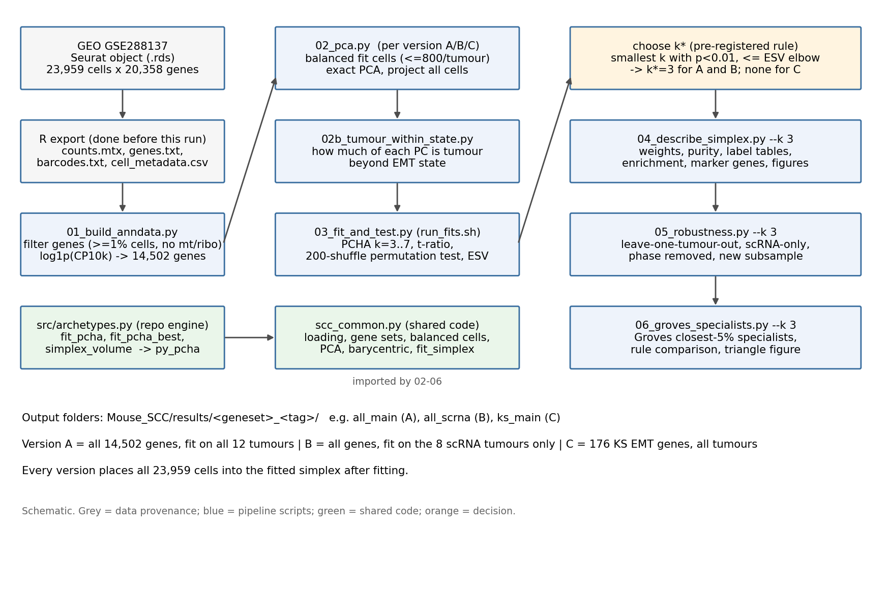
Figure 1. Master workflow of the Mouse_SCC pipeline (schematic). Grey boxes: data provenance (done before the pipeline run). Blue: pipeline scripts in Mouse_SCC/codes/. Green: shared code (scc_common.py) and the repository's PCHA engine (src/archetypes.py). Orange: the decision of how many corners to keep. Each script and output is explained in Chapter 7.
Learning checkpoint 1
This chapter teaches only the biology needed for this project, and connects each concept to the data.
Every cell in a mouse carries (almost) the same DNA, about 20,000 protein-coding genes. What makes a skin cell different from a liver cell, or an epithelial tumour cell different from a mesenchymal one, is which genes are switched on, and how strongly. A gene is "expressed" when it is copied (transcribed) into messenger RNA (mRNA), which is then translated into protein. The amount of mRNA of each gene in a cell is its gene-expression profile: a list of about 20,000 numbers.
Connection to the data. In this dataset each cell is described by counts of mRNA molecules for 20,358 genes (before filtering) and 14,502 genes (after filtering). Each cell is therefore a point in a space with 14,502 axes, one per gene. Everything in this project is geometry in that space.
Single-cell RNA sequencing (scRNA-seq) measures the mRNA of thousands of individual cells at once. In the 10x Genomics Chromium method used here, each cell is captured in a tiny droplet with a bead carrying a unique cell barcode; every mRNA molecule copied in that droplet is tagged with that barcode and with a unique molecular identifier (UMI), so molecules can be counted. The result is a count matrix: genes × cells, mostly zeros, because only a few thousand of a cell's mRNA molecules are captured.
Single-cell multiome (10x "Single Cell Multiome ATAC + Gene Expression") measures, in the same cell, both RNA and chromatin accessibility (ATAC). It must be done on isolated nuclei, not whole cells. The GEO record for this series confirms nuclei isolation for the multiome samples: sorted cells were lysed in a lysis buffer, washed, and "Nuclei were resuspended in nuclei buffer … and loaded on Chromium Next GEM Single Cell Multiome" chips (GSE288137 series matrix, overall design).
Why this matters here. RNA in a nucleus is not the same population as RNA in a whole cell. Nuclei contain newly made, partly unspliced transcripts and lack most cytoplasmic mRNA. Studies comparing matched nuclei and cells report systematic differences, including a relative excess of reads from long genes with many intronic regions in nuclear data [23]. In this project, one simplex corner turns out to track exactly such a long-gene signal (§9.11). Treat this as a known technical difference between assays, not as biology.
Squamous cell carcinoma is a cancer of keratinocytes, the flat cells that make up the outer skin (epidermis). Keratinocytes are epithelial cells: they sit in sheets, stick to each other through junctions (E-cadherin, Cdh1), and express keratins (Krt14, Krt5 in the basal layer).
The tumours here come from LKPR mice: Lgr5-CreER; Kras^LSL-G12D; Trp53^fl/fl; Rosa26-YFP (GEO sample characteristics). In words:
Lgr5-CreER puts an enzyme (Cre) into Lgr5-expressing hair-follicle stem cells; tamoxifen activates it.Kras (G12D) and deletes both copies of the tumour suppressor Trp53 (p53).Tamoxifen was given at postnatal day 28; tumours appeared after 7–9 weeks (GEO overall design). This model was characterised by Latil et al. (2017) [4] and shows spontaneous EMT: within one tumour, some cells stay epithelial and others become mesenchymal [1, 2].
Connection to the data. All cells analysed are YFP⁺, lineage-negative (CD45⁻, CD31⁻) tumour cells sorted by FACS (GEO overall design). So immune cells, blood vessels and normal skin are excluded, and differences between cells reflect tumour-cell states, tumour identity and technology.
EMT is a programme in which epithelial cells lose cell–cell adhesion and polarity and gain mesenchymal traits: they become motile, invasive and fibroblast-like [3, 22]. It is normal in embryonic development and wound healing, and is used by cancer cells during invasion and metastasis. It is controlled by EMT transcription factors such as Snai1, Twist1, Zeb1, Zeb2 and Prrx1 [1, 3].
Current consensus (the EMT International Association guidelines [22]) stresses that EMT is a spectrum: cells can sit at intermediate, "hybrid" or "partial" states, co-expressing epithelial and mesenchymal genes, and they can move back (MET). The guidelines also warn against defining EMT from one or two markers.
Pérez-González et al. defined the states by unsupervised clustering of the integrated single-cell data. Figure 2 summarises the marker genes they report; quotations are from their Results [1].
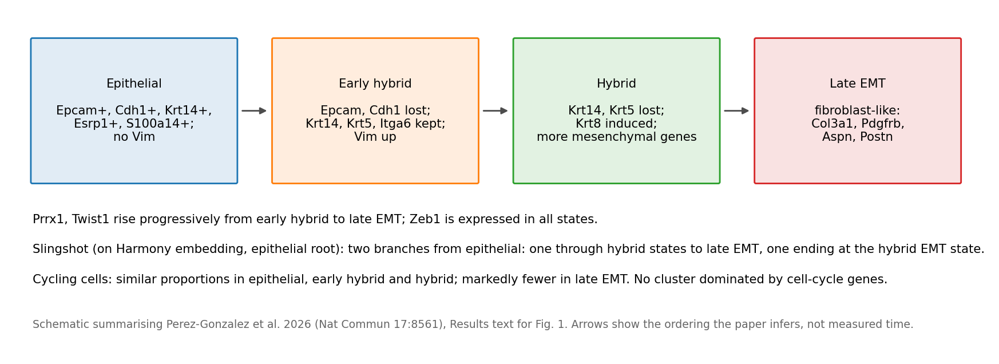
Figure 2. EMT states in LKPR skin SCC as described by Pérez-González et al. (2026) (schematic, from the paper's text). Boxes list the marker genes reported for each state. Arrows show the ordering inferred by the authors' trajectory analysis, not measured time. The text below the boxes summarises their transcription-factor, trajectory and cell-cycle statements.
| State (label in data) | Reported markers [1] | n cells here |
|---|---|---|
| Epithelial | Epcam⁺, Cdh1⁺, Krt14⁺, Esrp1⁺, S100a14⁺; no Vim; includes a small more-differentiated squamous subpopulation |
4,146 |
| Early-Hybrid | Epcam, Cdh1 lost; Krt14, Krt5, Itga6 retained; Vim up |
9,985 |
| Hybrid | Krt14, Krt5 lost; Krt8 induced (a simple-epithelium keratin); more mesenchymal genes |
3,608 |
| Late-EMT | fibroblast-like: Col3a1, Pdgfrb, Aspn, Postn |
6,220 |
The data also carry a finer label, clusterU, with nine groups (Epithelial; Epithelial (Differentiated); Proliferative Early Hybrid EMT; Early Hybrid EMT_1, _2, _3; Proliferative Hybrid EMT; Hybrid EMT; Late EMT). These names come from the deposited object. The paper's text describes two early-hybrid substates, "EMT-I" and "EMT-II" [1]; how Early Hybrid EMT_1/2/3 map to EMT-I/II was not verified and should not be assumed.
This project, like most single-cell work, mixes four kinds of statement that are easy to confuse:
| Kind | Example | What establishes it |
|---|---|---|
| Expression pattern | "Late-EMT cells express more Col3a1." |
Counting mRNA. Direct observation (with measurement noise). |
| Inferred state | "This cell is in the Hybrid state." | A clustering algorithm grouped similar cells and a person named the group. Depends on algorithm, parameters and markers. |
| Temporal transition | "Cells go epithelial → early hybrid → hybrid → late." | Needs time: lineage tracing, live imaging, time courses. Trajectory algorithms (Slingshot) propose an order from snapshot similarity; they do not observe time. |
| Mechanism | "Klf5 drives early EMT." | Needs intervention: knockouts, rescue. The paper did CRISPR loss-of-function experiments for this [1]. |
Archetype analysis produces geometric statements about expression patterns. It can say "these cells are extreme along this direction". It cannot by itself say that cells move between corners, nor that a corner's genes cause anything.
Dividing cells pass through phases: G1 (growth), S (DNA synthesis) and G2/M (preparation for and execution of division). Each phase has characteristic gene expression, so cell-cycle phase is a large source of variation in single-cell data. The data include a phase label (G1 14,966; S 4,355; G2M 4,638 cells), computed by the authors with a standard scoring method (the exact method for this column was not documented in the object and was not verified).
The paper reports that cycling cells occur "at similar proportions in epithelial, early hybrid, and hybrid EMT states, but were markedly reduced in late EMT" [1]. This matters because a "proliferative" corner could be a cell-cycle signal rather than an EMT state. Hausser et al. treat cell division as one of the universal tasks of cancer cells [7], so a proliferation corner is not necessarily an artefact; it is a different kind of corner from an EMT state.
Each tumour arose independently, so each has its own mutations, history and microenvironment. Cells from one tumour are not independent replicates: they share all of that. The unit of biological replication is the tumour (n = 12 here), not the cell (n = 23,959). Treating cells as independent is called pseudoreplication and produces over-confident statistics [24]. This idea returns repeatedly: a corner made of cells from one tumour is one observation, not hundreds.
Learning checkpoint 2
Krt14/Krt5; hybrid cells lose them and gain Krt8.This chapter places the project in what is already known. It is selective: only work that the project builds on or tests against.
Klf5 and Pitx1 control early EMT and are needed for metastasis; Nfatc1 and Creb3l1 act later.What the paper does not do: it does not test whether the states form a simplex or a continuum, and it does not ask which states are "specialists". That is the gap this project addresses.
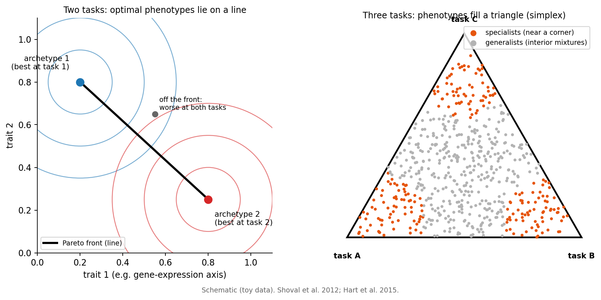
Figure 3. The Pareto-front idea (schematic, toy data). Left: with two tasks, each task has an optimal phenotype (archetype; circles are performance contours). The best compromises lie on the straight line between the archetypes; a phenotype off the line (grey) is worse at both tasks than some phenotype on the line. Right: with three tasks, the best compromises fill a triangle. Cells near a corner are specialists (orange; here purity gap ≥ 0.35), cells inside are generalists (grey).
Separately from the biology, archetypal analysis is a statistical technique introduced by Cutler & Breiman 1994 [11]: represent every data point as a convex mixture of a few "archetypes", which are themselves convex mixtures of data points. Mørup & Hansen 2012 [12] gave the fast algorithm PCHA (Principal Convex Hull Analysis) used in this project through the Python package py_pcha.
Important distinction: archetypal analysis will always return k archetypes for any data, including a featureless blob. Whether those archetypes mean anything is a separate question, which is why ParTI adds a statistical test (§6.5).
The KS gene list used in version C comes from Tan et al. 2014 [13], who derived epithelial and mesenchymal gene signatures (from cell lines) and an EMT score using a two-sample Kolmogorov–Smirnov (KS) statistic, hence "KS". The repository file is Breast Cancer/data/processed/ks_cellline_signature_tan2014.csv (218 human genes: 170 epithelial and 48 mesenchymal by the file's category column; see §4.6 for the mouse mapping).
The thesis applied the same engine to breast cancer single-cell data (the "Pal" dataset), where a "hybrid" corner turned out to be a single patient (TN-0135). That lesson, that a corner can be one patient or one tumour, shaped several design choices here (tumour-balanced fitting, leave-one-tumour-out). The breast work itself is outside this report's scope and was not re-verified.
Putting this together: the EMT states of LKPR SCC are well described as clusters and as a branching trajectory, but nobody has asked whether they fill a task simplex, which states are specialists versus generalists, or whether the geometry is driven by EMT or by other axes (proliferation, tumour identity, technology). The single-cell Pareto literature also gives a methodological warning that applies directly: single-cell geometry can be dominated by noise and batch [8].
Learning checkpoint 3
| Step | What | Evidence |
|---|---|---|
| Download | GEO series GSE288137, files from the NCBI FTP tree on 2026-10-09 | data/raw/DOWNLOAD_LOG.md (sha256 checksums recorded) |
| Object | GSE288137_SCO.rds.gz (743 MB), a Seurat object; GEO calls it Scanpy-processed data in Seurat format. Unpacked to GSE288137_SCO_unpacked.rds (3.0 GB) |
DOWNLOAD_LOG.md; file on disk |
| Unused | GSE288137_RAW.tar holds a breast sample and PDX files, not the mouse SCC libraries |
DOWNLOAD_LOG.md |
| R export | Counts, gene names, barcodes, metadata and three embeddings written to plain files | files in data/processed/ (the R commands are not saved in the project; see §4.8) |
The 12 mouse SCC libraries have no per-sample count matrices on GEO; the Seurat object is the only processed source. GEO titles the samples SC1–SC8 and MU1–MU4, with library names sc2b1, sc2b3, sc15, sc32, sc33, sc35, sc43, sc46, mu3, mu4, mu7, mu8. The object uses the library names (SC2b1, …, MU8), and this report does too.
After export the data are a count matrix with 20,358 genes and 23,959 cells (counts.mtx, MatrixMarket format, genes × cells), plus metadata.
cell_metadata.csv)| Column | Meaning | Values (verified) |
|---|---|---|
barcode |
cell identifier | 23,959 unique |
sample |
tumour/library | 12 tumours (Table below) |
assay |
technology | scRNA 14,059; multiome 9,900 |
cluster_annotation |
paper's EMT state | Epithelial 4,146; Early-Hybrid 9,985; Hybrid 3,608; Late-EMT 6,220 |
clusterU |
finer cluster | 9 groups (§2.5) |
phase |
cell-cycle phase | G1 14,966; S 4,355; G2M 4,638 |
nCount_RNA |
total UMIs per cell (sequencing depth) | median scRNA 22,873; multiome 10,014 |
nFeature_RNA |
genes detected per cell | median scRNA 4,684; multiome 3,326 |
pct_counts_mt |
% UMIs from mitochondrial genes | median scRNA 4.6%; multiome 13.4% |
pct_counts_ribo |
% UMIs from ribosomal-protein genes | median scRNA 18.0%; multiome 10.7% |
LKPR_*_andrea (4) |
authors' state signature scores | continuous; exact definition not documented in the object |
Correction to an earlier project note.
WALKTHROUGH.md(written during the run) states that nuclear RNA is "poorer in mitochondrial RNA". In this dataset the multiome cells have a higher median % mitochondrial counts (13.4% vs 4.6%). The general expectation does not hold here; why is unknown (possibly how mitochondrial genes were counted in the multiome processing). The report does not rely on mitochondrial fraction to identify nuclei.
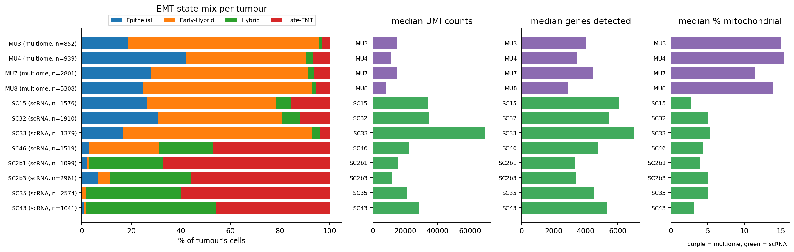
Figure 4. Composition and quality of each tumour (empirical; from cell_metadata.csv). Left: percentage of each tumour's cells in each EMT state, with assay and cell count in the label. Right three panels: median UMI counts, genes detected and % mitochondrial counts per tumour (purple = multiome, green = scRNA). Generated by make_report_figures.py::emp_data.
| Tumour | Assay | Cells | Epi | Early-Hyb | Hybrid | Late |
|---|---|---|---|---|---|---|
| MU3 | multiome | 852 | 160 | 654 | 13 | 25 |
| MU4 | multiome | 939 | 393 | 457 | 25 | 64 |
| MU7 | multiome | 2,801 | 782 | 1,774 | 65 | 180 |
| MU8 | multiome | 5,308 | 1,307 | 3,629 | 77 | 295 |
| SC15 | scRNA | 1,576 | 416 | 818 | 98 | 244 |
| SC2b1 | scRNA | 1,099 | 23 | 11 | 326 | 739 |
| SC2b3 | scRNA | 2,961 | 187 | 155 | 965 | 1,654 |
| SC32 | scRNA | 1,910 | 589 | 956 | 139 | 226 |
| SC33 | scRNA | 1,379 | 232 | 1,049 | 43 | 55 |
| SC35 | scRNA | 2,574 | 2 | 46 | 981 | 1,545 |
| SC43 | scRNA | 1,041 | 11 | 6 | 546 | 478 |
| SC46 | scRNA | 1,519 | 44 | 430 | 330 | 715 |
Observations. Every tumour has exactly one assay. The four multiome tumours are 90–96% epithelial/early-hybrid. Four scRNA tumours (SC2b1, SC2b3, SC35, SC43) are 88–98% hybrid/late. Four tumours (SC2b3, SC35, SC46, SC2b1) supply 75% of late-EMT cells. Sequencing depth varies 9-fold between tumours (median UMIs 7,989 in MU8 to 69,517 in SC33).
Why it matters. When three factors move together, an axis of variation that separates them can be called "EMT", "tumour" or "technology" with equal justice. Figure 5 shows the logic. Much of the design (tumour balancing, within-state diagnostics, scRNA-only fit, leave-one-out) exists to pull these apart as far as the design allows.
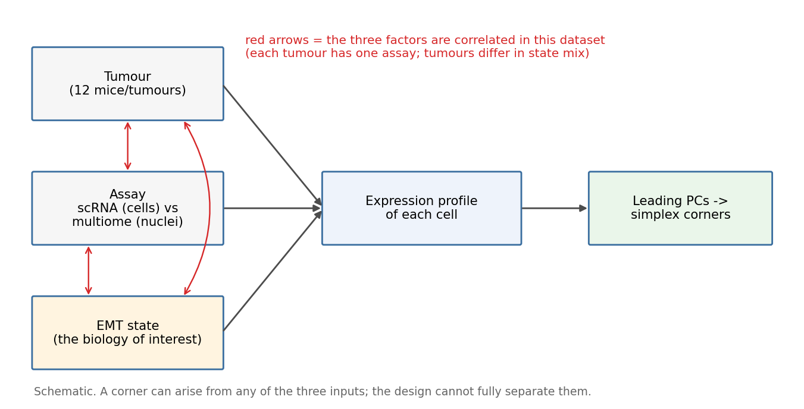
Figure 5. Why confounding matters (schematic). Tumour, assay and EMT state all shape each cell's expression profile, and in this dataset they are correlated with one another (red arrows). The PCs and the simplex corners are computed from the profiles, so a corner can be produced by any of the three.
codes/01_build_anndata.py reads the exported files, checks them and writes data/processed/expr_log_filtered.h5ad. The essential lines (actual code):
m = scipy.io.mmread(P + "counts.mtx").tocsr() # genes x cells
...
assert m.shape == (len(genes), len(barcodes)), "matrix shape does not match gene/barcode lists"
assert list(meta.index) == barcodes, "metadata order does not match barcodes"
assert len(set(barcodes)) == len(barcodes), "duplicate barcodes"
adata = ad.AnnData(X=m.T.tocsr().astype(np.float32), obs=meta, var=pd.DataFrame(index=genes))
adata.layers["counts"] = adata.X.copy()
det = np.asarray((adata.X > 0).sum(0)).ravel() >= 0.01 * adata.n_obs
bad = adata.var_names.str.match(r"^(mt-|Mt-)") | adata.var_names.str.match(r"^(Rpl|Rps|Mrpl|Mrps)\d")
keep = det & ~np.asarray(bad)
adata = adata[:, keep].copy()
sc.pp.normalize_total(adata, target_sum=1e4)
sc.pp.log1p(adata)
Step by step:
AnnData wants cells × genes, so .T. csr is a compressed sparse format that stores only non-zero values (most counts are 0).A small discrepancy in the gene filter. The ribosomal pattern
^(Rpl|Rps|Mrpl|Mrps)\drequires a digit immediately after the prefix, soRplp0,Rplp1,Rplp2andRpsa(ribosomal-protein genes) were not removed. They remain among the 14,502 genes (verified). The effect is probably small, but the filter does not do exactly what its comment says.
The handoff document describes an "arm A" that would keep mitochondrial/ribosomal genes, because Hausser's "biomass and energy" task is built partly from such genes [7]. Arm A was not built. All three versions use the filtered matrix.
scc_common.ks_genes_mouse maps human symbols to mouse by capitalisation (CDH1 → Cdh1):
mouse = s["gene_symbol"].str[0] + s["gene_symbol"].str[1:].str.lower()
Of 218 genes, 195 have a matching name in the 20,358 raw genes and 176 survive the 1% filter (131 epithelial, 45 mesenchymal). Names that do not map include FOXA1, S100P, CEACAM6 and several C*orf* genes. Capitalisation is a crude ortholog mapping: it works for most one-to-one orthologs but misses genes with different mouse names and cannot handle one-to-many orthologs. A proper ortholog table (e.g. from Ensembl/MGI) would be more rigorous.
Cells are captured with different efficiency, so raw counts are not comparable between cells. Two steps fix this.
Counts per 10,000 (CP10k). For cell \(i\) and gene \(g\) with count \(c_{ig}\) and total \(N_i = \sum_g c_{ig}\):
Log transform. \(x_{ig} = \ln(1 + \tilde{x}_{ig})\) (Eq. 2). The log compresses the huge range of expression so that a few very highly expressed genes do not dominate distances, and roughly stabilises variance. The +1 avoids \(\ln 0\).
Toy example. Cell A has 20,000 UMIs, 40 of gene X; cell B has 5,000 UMIs, 10 of gene X. Raw counts differ 4-fold. CP10k: A = 40/20,000 × 10⁴ = 20; B = 10/5,000 × 10⁴ = 20. Same. Log: ln 21 ≈ 3.04 for both.
Caveats. CP10k assumes each cell's total mRNA is comparable, which is not true for nuclei vs whole cells. Library-size normalisation does not remove all depth effects: in version B, PC2 still correlates with log depth (R² = 0.48; §9.3). Alternatives include scran pooling size factors, SCTransform (regularised negative binomial residuals) and analytic Pearson residuals; each could change the leading PCs.
counts.mtx and the metadata are not saved in the project. Their correctness rests on the checks in script 01 (shape and order assertions) and the handoff record that counts are integers. The exported tumour × state table matches the coworker's table exactly (handoff record; not re-checked here).Learning checkpoint 4
Rplp0/1/2, Rpsa: the regex requires a digit right after Rpl/Rps.This chapter teaches the mathematics from scratch, with toy examples. Chapter 6 then applies each idea to the actual implementation.
A cell with expression values for \(G\) genes is a vector \(\mathbf{x} = (x_1, x_2, \dots, x_G)\), a point in \(G\)-dimensional space. Stacking \(n\) cells as rows gives the data matrix \(X\) with shape \(n \times G\) (cells × genes). In version A the fit matrix is \(9{,}600 \times 14{,}502\).
Distance between two cells is the Euclidean distance \(\lVert \mathbf{x} - \mathbf{y}\rVert = \sqrt{\sum_g (x_g - y_g)^2}\). Every geometric statement in this project ("near a corner", "inside the triangle") uses this distance, after PCA.
Centring. Subtract each gene's mean over cells: \(X_c = X - \mathbf{1}\bar{\mathbf{x}}^\top\). After centring, the origin is the "average cell".
Variance of gene \(g\): \(\frac{1}{n-1}\sum_i (x_{ig}-\bar{x}_g)^2\). Total variance = sum over genes = \(\frac{1}{n-1}\lVert X_c\rVert_F^2\), where \(\lVert\cdot\rVert_F\) (Frobenius norm) is the square root of the sum of all squared entries.
Problem. 14,502 dimensions are too many to see, and most directions carry mostly noise. We want a few directions that capture most of the cell-to-cell differences.
Idea. Find the unit direction \(\mathbf{v}_1\) along which the cells' projections have the largest variance (PC1); then the direction \(\mathbf{v}_2\), perpendicular to \(\mathbf{v}_1\), with the next largest variance (PC2); and so on (Figure 6).
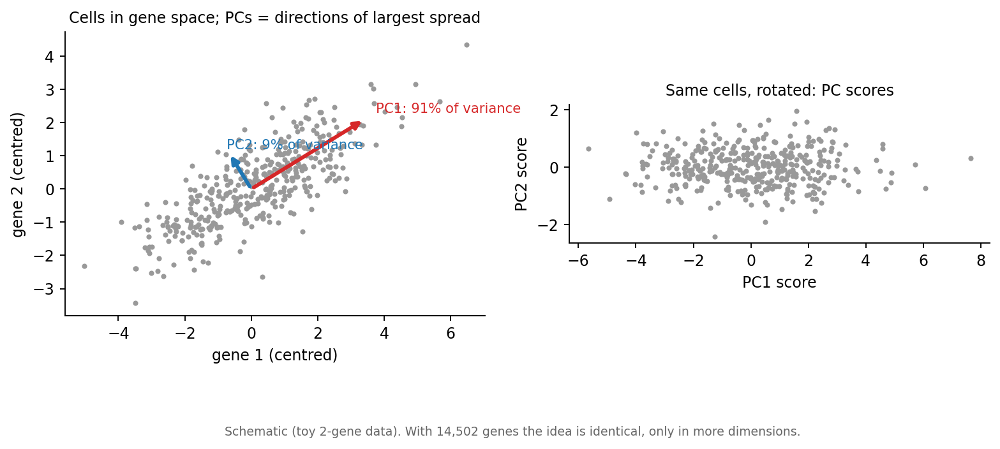
Figure 6. PCA on toy two-gene data (schematic). Left: cells in gene space with the two principal directions (arrows; length ∝ standard deviation). Right: the same cells expressed in PC coordinates, which is just a rotation. With 14,502 genes the operation is the same, in more dimensions.
Formulation (singular value decomposition, SVD). Any centred matrix can be written
Projecting new cells. A cell \(\mathbf{x}\) that was not used to fit the PCA gets scores \((\mathbf{x}-\bar{\mathbf{x}})V\), using the fit cells' mean \(\bar{\mathbf{x}}\). This is how all 23,959 cells are placed even though only ~9,600 cells define the PCs.
The "gram" shortcut (used in this project). The matrix \(G = X_c X_c^\top\) (\(n\times n\), cells × cells) has eigenvectors \(U\) and eigenvalues \(s_j^2\), because \(X_cX_c^\top = U\Sigma^2U^\top\). So the top PCs can be obtained from the top eigenvectors of \(G\), then \(V^\top = \Sigma^{-1}U^\top X_c\). With \(n = 9{,}600 < G = 14{,}502\), computing only the top 200 eigenpairs of \(G\) is much faster than a full SVD and gives the same PCs.
Assumptions and limits. PCA finds linear directions of maximum variance. Large variance is not the same as biological importance: a batch effect with big variance will be PC1. PCA is sensitive to scaling: unscaled data let highly variable genes dominate.
Sign. A PC direction and its negative are equally valid; the code fixes the sign so the largest-magnitude loading is positive, so reruns give the same orientation.
A convex combination of points \(\mathbf{a}_1,\dots,\mathbf{a}_k\) is \(\sum_j w_j \mathbf{a}_j\) with all \(w_j \ge 0\) and \(\sum_j w_j = 1\). It always lies "between" the points.
The convex hull of a data cloud is the smallest convex shape containing all points: the shape a rubber band would make around them. Its volume (area in 2-D) is computed in this project by the Qhull library [31] via scipy.spatial.ConvexHull.
A simplex with \(k\) vertices is the set of all convex combinations of \(k\) points in \(k-1\) dimensions: \(k=2\) a segment, \(k=3\) a triangle, \(k=4\) a tetrahedron. It needs exactly \(k-1\) dimensions, which is why a k-corner fit uses only the first k−1 PCs.
Volume of a simplex with vertices \(\mathbf{a}_1,\dots,\mathbf{a}_k\) in \(k-1\) dimensions:
For a triangle this is the familiar ½ |base × height|. This is exactly simplex_volume in src/archetypes.py.
Given a simplex with corners \(\mathbf{a}_1..\mathbf{a}_k\) in \(k-1\) dimensions, any point \(\mathbf{p}\) in that space can be written uniquely as
The \(w_j\) are the point's barycentric coordinates (weights). Inside the simplex all \(w_j \ge 0\); outside, at least one is negative. Writing Eq. 5 as a square linear system:
which scc_common.barycentric solves with np.linalg.solve.
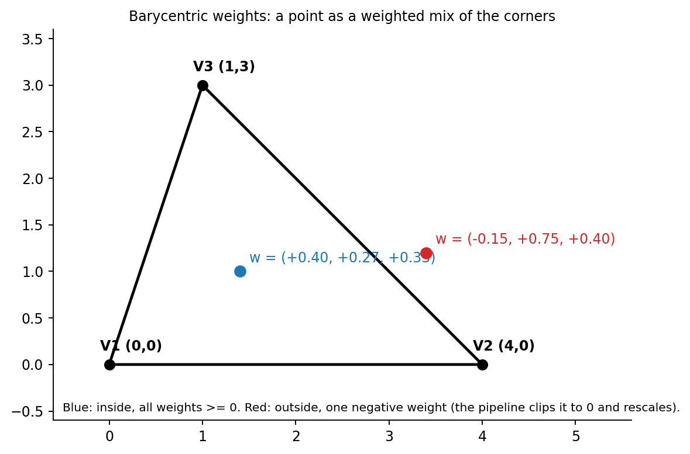
Figure 7. Barycentric weights (schematic, exact numbers). Triangle V1 = (0,0), V2 = (4,0), V3 = (1,3). The blue point (1.4, 1.0) has weights (0.40, 0.27, 0.33): check 0.40·(0,0) + 0.27·(4,0) + 0.33·(1,3) ≈ (1.4, 1.0). The red point (3.4, 1.2) lies outside and has weights (−0.15, 0.75, 0.40).
Worked check for the blue point. With \(w = (0.4, 0.2667, 0.3333)\): \(x = 0.2667\cdot 4 + 0.3333\cdot 1 = 1.4\); \(y = 0.3333\cdot 3 = 1.0\); weights sum to 1. ✓
Interpretation in this project. A cell with weights (0.8, 0.1, 0.1) is "80% corner 1". Biologically, Pareto theory reads this as the cell performing mostly task 1. That reading is an interpretation, not something the arithmetic proves.
The pipeline turns weights into categories:
composition). Toy red point: (−0.15, 0.75, 0.40) → (0, 0.65, 0.35).Two other rules are used (Groves [8]): closest 5% of cells to each corner (by Euclidean distance) and weight > 0.95. They answer slightly different questions (§6.10) and give very different numbers.
If a model approximates data \(X\) by \(\hat{X}\), the sum of squared errors is \(\text{SSE}=\lVert X-\hat{X}\rVert_F^2\) and the total sum of squares \(\text{SST}=\lVert X\rVert_F^2\) (for centred \(X\)). Explained variance \(= (\text{SST}-\text{SSE})/\text{SST}\). In archetype analysis this is called ESV (explained sample variance). It always grows with more corners, so it cannot by itself choose \(k\).
For a numeric variable \(y\) (e.g. PC1 scores) and a grouping (e.g. tumour) with groups \(g\), sizes \(n_g\) and means \(\bar y_g\):
\(\eta^2\) = fraction of \(y\)'s variance that is "just which group the cell is in". It is the \(R^2\) of a one-way ANOVA. For a numeric covariate (log depth, % mito) the code uses the squared Pearson correlation \(r^2\) instead.
Within-state version. First replace \(y\) by residuals \(y_i - \bar y_{\text{state}(i)}\), then compute \(\eta^2\) for tumour. This asks: once EMT state is accounted for, how much of what remains is tumour identity?
Problem. We computed a statistic (the t-ratio) on real data and want to know whether it is unusually large compared with data that have "no structure".
Recipe.
With 200 shuffles the smallest possible p is 1/201 ≈ 0.005. The +1 counts the observed data as one possible draw from the null, which keeps the test valid and prevents p = 0.
What a small p means. Only that the real data are more extreme than the specific null. It does not say the alternative you have in mind (a Pareto front) is true; any structure that the null destroys (batch clusters, tumour fingerprints, correlation between PCs' tails) can produce a small p.
Question. Among the 10% of cells closest to a corner, are late-EMT cells over-represented?
With \(N\) cells in total, \(K\) of them late-EMT, and a bin of \(n\) cells containing \(k\) late-EMT cells, under random sampling without replacement \(k\) follows a hypergeometric distribution. The p-value is \(P(X \ge k)\). Fold enrichment = \((k/n)/(K/N)\).
Testing many labels × corners × bins inflates false positives, so p-values are converted to Benjamini–Hochberg q-values [20], which control the expected fraction of false discoveries among the significant results (FDR). The code calls a result significant if q < 0.1.
Two fits (e.g. with and without a tumour) produce corners in different PC spaces with arbitrary labels. To compare them, the code builds a \(k\times k\) table of how many cells are nearest to corner \(i\) in fit 1 and corner \(j\) in fit 2, then finds the one-to-one matching with the largest total count using the Hungarian algorithm [30] (scipy.optimize.linear_sum_assignment). Agreement = matched cells / all cells.
Learning checkpoint 5
Each method below follows the same template: problem → intuition → formulation → parameters → inputs/outputs → assumptions → why used here → alternatives → how to read the output → limitations. Everything is checked against the code that ran.
Problem. Tumours differ a lot in size (852 to 5,308 cells) and state mix. If the shape is fitted on all cells, MU8 (5,308 cells) and SC2b3 (2,961) pull the corners towards themselves.
Method (scc_common.balanced_fit_cells): for each tumour, draw at most MAX_PER_TUMOUR = 800 cells at random (seed = 0); keep all cells of smaller tumours (none here; the smallest, MU3, has 852). Version A: 12 × 800 = 9,600 fit cells. Version B (only_assay="scRNA"): 8 × 800 = 6,400.
After fitting, all 23,959 cells are projected into the same PCs and simplex, so every cell receives weights.
Assumptions. That each tumour deserves equal weight in defining the axes. This is a choice, not a fact: it gives a tumour with 1,000 cells the same influence as one with 5,000.
Alternatives. Fit on all cells (larger tumours dominate); balance by state instead of tumour (would over-weight rare states and still be confounded); balance by tumour × state (many cells unavailable for small groups).
Limitations. Balancing by tumour does not remove the tumour–state confounding: late-EMT cells still come from few tumours. One random draw; checked with two other seeds (§9.10: 99% agreement).
Code (scc_common.fit_pca, method "gram"; shown in §7.3). Steps:
Xfit_dense = fit cells × genes, log-CP10k values, as float64.scipy.linalg.eigh(..., subset_by_index=...)), then compute loadings \(V^\top = \Sigma^{-1}U^\top X_c\). Otherwise, a full SVD. (Version C has 176 genes, so it used the full SVD.)project() computes scores for all 23,959 cells from the sparse matrix without densifying it: \(XV^\top - \bar{\mathbf{x}}V^\top\).Validation performed during the run. For version A, the gram method was compared with the full SVD on the same 9,600 × 14,502 matrix: maximum difference in explained-variance ratios 6.9 × 10⁻¹⁶; score correlations ≥ 0.9999999999999993 for all 50 PCs; maximum absolute score difference (PCs 1–10) 6.6 × 10⁻¹³. It was also compared with sklearn's randomized PCA (|r| ≥ 0.9996 on PCs 1–10 in all versions; pca_info.json). The projection was checked to reproduce the fit cells' SVD scores (an assert in 02_pca.py).
Implementation note. Version A's saved
pca.npzwas produced with the full-SVD method (it ran before the gram method was added). Versions B and C used the current code. Because the two methods agree to rounding error, this does not affect results.
The 0.1% PC-count rule. 02_pca.py reports how many PCs each add ≥ 0.1% of variance (Groves's single-cell rule [8]): 49 PCs (A, 31.8% of total variance), 56 (B, 36.3%), 108 (C, 97.1%). This number is reported but not used by any later step. The fit uses k−1 PCs; the ESV curve uses a fixed 10 PCs. The docstring of 02_pca.py says the rule is "used for the ESV curve"; that is inaccurate (a documentation discrepancy).
Alternatives. Highly-variable-gene selection before PCA (the paper did this); scaling genes to unit variance; batch-corrected embeddings (Harmony, scANVI); non-linear embeddings (UMAP is for visualisation, not geometry). Each would change which directions lead.
Problem. Find \(k\) corners such that every cell is well approximated as a mixture of the corners, and the corners are themselves realistic (mixtures of real cells).
Formulation (Mørup & Hansen [12]; implemented in py_pcha.PCHA). With data \(X\) arranged as dimensions × cells (\(d \times n\)):
delta): relaxes \(\mathbf{1}^\top C\) to lie in \([1-\delta, 1+\delta]\), allowing corners slightly outside the hull. This project uses δ = 0, so corners must be inside the hull.Algorithm (read from py_pcha/PCHA.py): initialise the archetypes with FurthestSum (start from a random cell, repeatedly add the cell farthest from those chosen) and \(S\) randomly; then alternate projected gradient updates of \(S\) (10 inner steps) and \(C\) (10 inner steps), with adaptive step sizes, projecting back onto the simplex constraints after each step. Stop when the relative change in SSE is < 10⁻⁶, after 500 iterations, or when explained variance reaches 0.9999. Return XC, S, C, SSE, varexpl with varexpl = (SST − SSE)/SST, where SST is the sum of squares of the input (the PC scores, which are centred).
Multiple starts (src/archetypes.fit_pcha_best): the problem is non-convex, so different starts can give different answers. The engine runs PCHA n_init times on the first k−1 PCs only and keeps the largest-volume simplex (ParTI's convention). Real fits: n_init = 15; shuffled fits: 5.
def fit_pcha_best(pc_scores, k, n_init=50, delta=0.0, conv_crit=1e-6, maxiter=500):
"""Match ParTI: fit PCHA n_init times on the first (k-1) PCs, keep max volume."""
scores = np.asarray(pc_scores, dtype=float)[:, : int(k) - 1]
...
for _ in range(int(n_init)):
archetypes, weights, varexpl = fit_pcha(scores, k, delta=delta, ...)
vol = simplex_volume(archetypes)
if np.isfinite(vol) and vol > best_vol: ...
Report-time check of the 15-versus-5 asymmetry. If more starts systematically found bigger triangles, the real data (15 starts) would get an unfair advantage over the shuffles (5 starts), making p too small. For k = 3, re-fitting the real data six times with only 5 starts gave exactly the same t-ratio (0.52897 for B, 0.52842 for A, to 5 decimals) every time. So at k = 3 the asymmetry has no effect. It was not checked for k ≥ 4.
Toy illustration. Figure 8 (left) shows PCHA, run with the project's own engine, on toy points drawn inside a triangle with noise. The fitted corners (orange) sit inside the cloud, slightly inside the true corners (dotted), as δ = 0 requires.
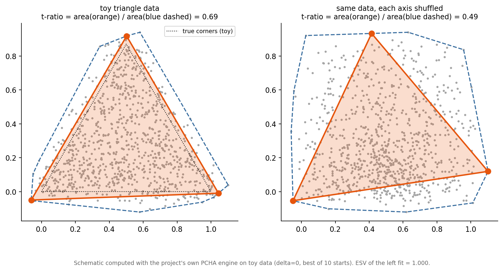
Figure 8. PCHA and the t-ratio on toy data (schematic, computed with the project's engine). Left: 900 toy points generated inside a triangle plus noise. Orange: best-of-10 PCHA triangle (δ = 0); blue dashed: convex hull; dotted: true generating corners. t-ratio = orange area / blue area = 0.69. Right: the same points with each axis shuffled independently. The shape is destroyed and t falls to 0.49. This contrast is the logic of the permutation test.
Assumptions. That the data's geometry in the first k−1 PCs is approximately a simplex; that corners lie within the data (δ = 0); Euclidean distance in unscaled log-expression PC space is meaningful.
Why used. It is the thesis's engine (comparability with the breast work) and ParTI's standard method.
Alternatives. δ > 0 (Hausser and ParTI often allow corners slightly outside the data, which gives tighter fits and larger t-ratios); other archetypal analysis algorithms (e.g. the original alternating least squares of Cutler & Breiman [11]); non-negative matrix factorisation (parts-based, not geometric); AAnet (neural archetypal analysis); clustering (discrete groups, no mixtures).
Limitations. (i) Always returns k corners, structure or not. (ii) With δ = 0 and noisy data, corners sit inside the cloud, so many cells fall outside the simplex (§9.5). (iii) Only k−1 PCs are used, so everything beyond them is ignored. (iv) Corners are pulled by outlying cells.
computed as simplex_volume(arcs) / ConvexHull(scores[:, :k-1]).volume. With δ = 0 the simplex is inside the hull, so \(0 < t \le 1\). If the data really fill a triangle, the best triangle covers most of the hull and \(t\) is near 1. A square cloud allows at most \(t = 0.5\) for a triangle; a disc allows about 0.41.
How to read it. Only relative to a null. Absolute values fall fast with k (a tetrahedron fills less of a 3-D blob than a triangle fills a 2-D blob), so t-ratios cannot be compared across k or across datasets.
Limitations. The hull is defined by the most extreme cells, so a few outliers inflate the denominator (and lower t). Hull volume also grows with the number of cells, so t depends on n; the null must use the same n (it does).
for i in range(start, args.n_perm):
sh = C._shuffle_columns(scores[:, : k - 1], rng) # shuffle each PC separately
np.random.seed(C.SEED + 10_000 * k + i)
arcs, *_ = C.fit_pcha_best(sh, k, n_init=C.N_INIT_NULL, delta=0.0)
null.append(t_ratio(sh, arcs))
...
p = (1 + np.sum(nl >= obs_t)) / (1 + len(nl))
(codes/03_fit_and_test.py.) Inputs: the fit cells' first k−1 PC scores. 200 shuffles per k, seeded so reruns are identical, saved after every shuffle (null_k{k}.npy) so a stopped run resumes. Output: fit_k{k}.json with observed t, null median, 95th percentile, maximum and p. All 3 × 5 × 200 = 3,000 null fits succeeded (no failures; verified from the arrays). The p-values in fit_summary.csv were recomputed from the saved null arrays at report time and match exactly.
Assumptions of this null. Shuffling PCs independently produces data with the same marginal distributions but no dependence between PCs. PCs are uncorrelated by construction, but uncorrelated is not independent: real data have dependence in their tails (e.g. cells extreme on PC1 are rarely extreme on PC2), which is exactly what makes a cloud triangular, but also what clusters and batch structure produce. So the test rejects "independent PCs", not "no Pareto front".
Alternatives. More shuffles (Groves used 1,000 [8]); nulls that keep tumour structure (shuffle within tumour); bootstrap stability of corner positions (Groves used 200 bootstraps at 75% of cells [8]); comparison of k by cross-validated ESV.
03_fit_and_test.py --esv fits k = 2..10 in the first 10 PCs (5 starts each, best ESV kept) and finds the elbow with ParTI's DimensionFinder idea: the k farthest from the straight line joining the first and last points of the curve.
d = np.abs(np.cross(p1 - p0, np.column_stack([k, y]) - p0)) / np.linalg.norm(p1 - p0)
return int(k[np.argmax(d)])
Results: elbow at k = 4 (A), 4 (B), 5 (C) (log_03_esv.txt).
Pre-registered decision rule: k = the smallest k with permutation p < 0.01 that is at or before the ESV elbow. A: p < 0.01 at k = 3 → k = 3. B: k = 3. C: no k ≤ 5 has p < 0.01 → no k**.
Limitations. The elbow is a heuristic and depends on the k range and on the number of PCs used (10 here, a fixed choice). The rule protects against choosing k after the fact, but not against an arbitrary rule.
04_describe_simplex.py computes, for every cell, barycentric weights in the first k−1 PCs (Eq. 6), the inside flag (all weights ≥ −10⁻⁶), clipped composition, purity and nearest corner, and calls a cell a specialist if purity ≥ 0.35, else interior. The 0.35 cut is a thesis convention from the breast work, not from a published source (this is stated in the repository's own notes).
Two kinds of weight. PCHA itself also returns weights (\(S\) in Eq. 9), which are non-negative by construction. The pipeline does not use them; it recomputes exact geometric barycentric weights, which can be negative for cells outside the simplex, and then clips. The two agree for cells inside the simplex.
src/enrichment.distance_bins sorts all cells by distance to each corner and splits them into 10 equal-count bins. hypergeometric_enrichment tests every label (state, clusterU, phase, tumour, assay) in every bin for over-representation (§5.9), with BH correction across all tests. The script reports bin-0 labels with fold ≥ 1.5 and q < 0.1. This follows the ParTI and Groves enrichment logic [6, 8].
Caution. With ~2,400 cells per bin, tiny effects are "significant"; read fold enrichment, not q.
vertex_marker_genes.csv). This is a descriptive ranking with no statistical test (ParTI uses Mann–Whitney tests).| Rule | Definition | Source | Counts as specialist |
|---|---|---|---|
| Gap ≥ 0.35 | largest − second weight ≥ 0.35 | thesis convention | cells clearly closer to one corner than to any other |
| Closest 5% | the 5% of reference cells nearest each corner (Euclidean, k−1 PCs) | Groves Fig. 3E [8] | a fixed 5% per corner, so 15% at k = 3, regardless of shape |
| Weight > 0.95 | one weight > 0.95 | Groves STAR Methods [8] | only cells almost on a corner |
06_groves_specialists.py sets the 5% cut-off distances on the reference cells (the cells the shape was fitted on; for version B, the 14,059 scRNA cells), then applies the same cut-offs to the other cells. No cell fell within the cut-off of two corners.
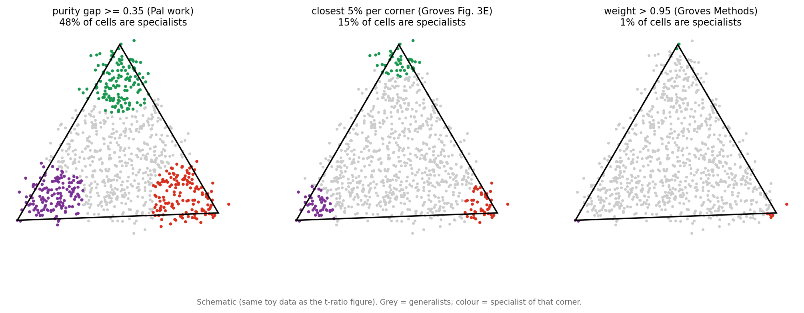
Figure 9. Three specialist rules on the same toy data (schematic). The gap rule labels most cells near any corner; the closest-5% rule labels a fixed fraction per corner; the weight > 0.95 rule labels only cells almost on a corner. The same data can therefore give very different "specialist fractions".
Why the rules disagree so much here. With δ = 0, corners sit inside the cloud and most cells near a corner have weights well below 0.95, so the 0.95 rule finds almost nobody (0.8% of scRNA cells). The 5% rule's radius depends on how dense the cloud is near each corner: around a sparse corner (V1 in version B) the 5% circle becomes very large (§9.8).
05_robustness.py redoes the whole fit (new fit cells, new PCA via gram, new 15-start PCHA) under four variants, places all 23,959 cells, matches the new corners to the main fit with the Hungarian method (§5.10), and records:
agreement_pct: % of all 23,959 cells with the same (matched) nearest corner;agreement_specialists_pct: the same, restricted to cells that are gap-rule specialists in both fits;Variants: loto (leave each tumour out; 12 for A, 8 for B), nophase (subtract per-phase gene means before PCA, a simple cell-cycle regression), seed (seeds 1 and 2 for the subsample), scrna (A only; not run as a variant because version B covers it).
Caveats. Agreement is computed over all 23,959 cells, including cells that were not fit cells (and for B, the projected multiome cells). The specialist agreement was 100% in every refit, which is an easy bar: it only counts cells clearly at a corner in both fits. The unused helper match_vertices in scc_common.py matches by coordinates; it was superseded by cell-based matching and is dead code.
For each phase \(p\), compute the fit cells' mean expression \(\boldsymbol{\mu}_p\) and the overall mean \(\boldsymbol{\mu}\); subtract \(\boldsymbol{\mu}_{p(i)} - \boldsymbol{\mu}\) from each cell (fit and projected cells alike) before PCA. This removes the average expression difference between phases. It does not remove within-phase cell-cycle variation and depends on the accuracy of the phase labels. A score-based regression (regressing out S and G2M scores) is the common alternative.
Learning checkpoint 6
Figure 1 (Chapter 1) is the master diagram. The table lists every script that produced a reported result, in the order it ran.
| Order | Script (in Mouse_SCC/codes/) |
Command (from Project_1/) |
Main inputs | Main outputs | Runtime (this Mac) |
|---|---|---|---|---|---|
| 0 | (R, not saved) | — | GSE288137_SCO_unpacked.rds |
data/processed/counts.mtx, genes.txt, barcodes.txt, cell_metadata.csv, emb_*.csv |
— |
| 1 | 01_build_anndata.py |
.venv/bin/python Mouse_SCC/codes/01_build_anndata.py |
files above | expr_log_filtered.h5ad |
~5 min |
| 2 | 02_pca.py |
... 02_pca.py --geneset all (A); --geneset all --assay scRNA (B); --geneset ks (C) |
h5ad | results/<run>/pca.npz, pca_info.json, pc_drivers.csv, pc_top_genes.csv, scree.png, pc1_pc2_by_label.png |
2–13 min |
| 2b | 02b_tumour_within_state.py |
... --geneset all --tag main etc. |
pca.npz, metadata |
pc_drivers_within_state.csv |
seconds |
| 3 | run_fits.sh → 03_fit_and_test.py |
bash Mouse_SCC/codes/run_fits.sh all main 200 |
pca.npz |
archetypes_k*.npy, null_k*.npy, fit_k*.json, esv_curve.csv, fit_summary.csv, fit_and_null.png |
~2–3 h per version (parallel) |
| 4 | 04_describe_simplex.py |
... --geneset all --tag scrna --k 3 |
pca.npz, archetypes, h5ad |
describe_k3/summary.md, cells_in_simplex.csv.gz, vertex_marker_genes.csv, distance_bin_enrichment.csv, simplex_PC*_PC*.png |
~2 min |
| 5 | 05_robustness.py |
... --geneset all --tag scrna --k 3 --variant loto (+ nophase, seed; --tag main --variant loto) |
h5ad, main fit | robustness/k3_<variant>.csv |
~1–2 min per refit |
| 6 | 06_groves_specialists.py |
... --geneset all --tag scrna --k 3 |
pca.npz, archetypes, metadata |
groves5_k3/cells_groves5.csv.gz, summary.md, triangle_groves5.png |
seconds |
Runs actually executed: step 2 for A, B, C; step 3 for A, B, C; step 4 for A (k = 3, 4), B (k = 3, 4), C (k = 3); step 5 for B (loto, nophase, seed) and A (loto); step 6 for B. Logs are in each results folder (log_*.txt).
Dependencies. Python 3.9 in Project_1/.venv with numpy 1.26.4, scipy 1.13.1, scikit-learn 1.6.1, pandas 2.3.3, matplotlib 3.9.4, anndata 0.10.9, scanpy 1.10.3, py_pcha 0.1.3; the repository modules src/archetypes.py and src/enrichment.py; the KS gene file under Breast Cancer/data/processed/.
scc_common.py, top)SEED = 0
MAX_PER_TUMOUR = 800 # tumour-balanced fit set (smallest tumour has 852 cells)
N_PCS_KEEP = 50 # PCs stored per cell; the fit uses only the first k-1
K_VALUES = (3, 4, 5, 6, 7)
N_INIT = 15 # PCHA starts for the real fit (same as the Pal fits)
N_INIT_NULL = 5 # PCHA starts per shuffled dataset
PURITY_CUT = 0.35 # specialist rule from the Pal work
Keeping every constant in one place means all scripts use the same values; changing one value changes every step consistently. sys.path.insert(0, str(ROOT)) lets the scripts import the repository's src/ package, so the PCHA engine is literally the same code as in the breast analyses.
Key flow (abridged from 02_pca.py):
a = C.load_adata() # log-CP10k, cells x genes, sparse
gi = C.gene_index(a, args.geneset) # all genes, or the 176 KS genes
X = a.X[:, gi].tocsr()
fit_idx = C.balanced_fit_cells(obs, only_assay=args.assay)
Xfit = X[fit_idx].toarray().astype(np.float64)
pca = C.fit_pca(Xfit, method=args.pca_method) # default "gram"
scores_all = C.project(X, pca, shift=shift_all) # all 23,959 cells
err = np.abs(scores_all[fit_idx] - pca["scores_fit"]).max()
assert err < 1e-6 * max(1.0, np.abs(pca["scores_fit"]).max())
Then, for PCs 1–10 on the fit cells, η² for tumour, assay, state, clusterU and phase, and r² for log depth and % mito (pc_drivers.csv); top 15 genes at each end of PCs 1–5 (pc_top_genes.csv); randomized-vs-exact agreement; the scree and PC1/PC2 plots. pca.npz stores scores_all (23,959 × 50), fit_idx, mean, components (50 × genes), evr (first 200), genes, barcodes.
Programming notes. X[fit_idx].toarray() makes a dense copy only of the fit cells (9,600 × 14,502 × 8 bytes ≈ 1.1 GB). C.project uses X_sparse @ V.T so the full 23,959-cell matrix is never densified. The assert is a cheap correctness check: if projection and fitting disagreed, the run would stop.
The --remove-phase option implements §6.12; it was used only inside 05_robustness.py.
run_fits.sh launches one process per k plus one for the ESV curve, with BLAS threads set to 1 so the processes share the 8 CPU cores without oversubscription, then calls --summarize:
export OMP_NUM_THREADS=1 OPENBLAS_NUM_THREADS=1 VECLIB_MAXIMUM_THREADS=1 MKL_NUM_THREADS=1
$PY -u $S --geneset $GENESET --tag $TAG --esv > $OUT/log_03_esv.txt 2>&1 &
for K in 3 4 5 6 7; do
$PY -u $S --geneset $GENESET --tag $TAG --k $K --n-perm $NPERM > $OUT/log_03_k$K.txt 2>&1 &
done
wait
$PY -u $S --geneset $GENESET --tag $TAG --summarize | tee $OUT/log_03_summary.txt
For each k, C.fit_simplex(scores, k) runs the 15-start PCHA and computes the t-ratio; the archetypes are saved as archetypes_k{k}.npy with shape (k, k−1) (corner coordinates in the first k−1 PCs). The shuffle loop is shown in §6.5. Resumability: on restart, the script reloads null_k{k}.npy and replays the random-number generator to the saved position, so the resumed run is identical to an uninterrupted one.
w = C.barycentric(scores[:, : k - 1], arcs)
comp = C.composition(w)
pur, near = C.purity_and_nearest(w)
cells["inside"] = (w >= -1e-6).all(1)
cells["specialist"] = pur >= C.PURITY_CUT
cells["group"] = np.where(cells["specialist"], cells["nearest"], "interior")
Then: KS EMT score per cell (§6.9); label tables; the tumour check (each corner's share from its top tumour and the number of tumours supplying ≥ 5% of its specialists); mean scores per group; distance-bin enrichment; marker genes; figures. Everything printed is also written to summary.md.
Important for reading version B outputs.
describe_k3/summary.mdfor version B computes every table over all 23,959 cells, including the 9,900 multiome cells that were not used to fit the shape (they were projected in). Several numbers quoted during the run (and inWALKTHROUGH.md§6.4) therefore mix fitted and projected cells. This report recomputes version B tables on the 14,059 scRNA cells where it matters (§9.6), and flags the difference.
fit_idx = C.balanced_fit_cells(obs, **sel) # e.g. exclude_tumours=["SC15"]
scores, fit = refit(X, obs, fit_idx, k, gi, remove_phase=rmphase)
near_new, spec_new = place(scores, fit["archetypes"], k)
near_new, agree = match(near_main, near_new, k) # Hungarian on the k x k table
refit repeats PCA (gram) and the 15-start PCHA from scratch. Results are appended to the CSV after each variant, so the script resumes after an interruption. For version B (--tag scrna), all variants keep the scRNA-only rule for fit cells.
ref = (meta["assay"] == "scRNA").values if args.tag == "scrna" else np.ones(len(meta), bool)
d = np.linalg.norm(pts[:, None, :] - arcs[None, :, : k - 1], axis=2) # cells x corners
cut = np.quantile(d[ref], FRACTION, axis=0) # 5% per corner
close = d <= cut
cls = np.where(close.sum(1) == 0, "generalist", np.array(V)[np.argmin(d / cut, axis=1)])
pts[:, None, :] - arcs[None, :, :] uses NumPy broadcasting to compute every cell-to-corner difference at once (cells × corners × dimensions). np.quantile(..., 0.05, axis=0) gives one cut-off distance per corner. It also computes the weight > 0.95 and gap rules for comparison and draws Figure 22.
research_report/make_report_figures.py generates every schem_* and emp_* figure in this report from saved outputs and copies the pipeline's own figures into figures/project/. It writes nothing into results/ or codes/. One function, emp_v1_longgene, computes a new descriptive score from the expression matrix (§9.11); it is a report-time verification analysis, not part of the pipeline.
Learning checkpoint 7
results/<run>/pca.npz, array scores_all.run_fits.sh set thread counts to 1? — So several k run in parallel without each process trying to use every core.All numbers below come from the files named; Chapter 9 explains each figure.
| # | Result | Kind | Source |
|---|---|---|---|
| R1 | On all genes, PC1 is explained by tumour (η² 0.76) and assay (0.54) more than by EMT state (0.50) in version A; within states, tumour still explains 33–66% of each of PCs 1–10 | computational | all_main/pc_drivers*.csv |
| R2 | On KS genes, PC1 (26.3% of variance) is EMT: state η² 0.81, tumour within state 0.09 | computational | ks_main/pc_drivers*.csv |
| R3 | k = 3 fits better than all 200 shuffles in A and B (t = 0.528 and 0.529; p = 0.005); KS genes: p = 0.83 at k = 3, 0.80 at k = 4 | statistical | */fit_summary.csv |
| R4 | Pre-registered rule gives k* = 3 for A and B, none for C | decision | §6.6 |
| R5 | Version B, k = 3 corners: V2 late EMT (94% of its scRNA specialists; collagens), V3 epithelial/early-hybrid and proliferative (54% S/G2M; keratins), V1 "long-gene" profile | computational + interpretation | all_scrna/describe_k3/ |
| R6 | V1's long-gene score is high in all multiome samples and in scRNA tumours SC15 and SC46, regardless of state | computational (report-time) | emp_v1_longgene.png |
| R7 | Hybrid cells are the least specialised state under all three rules (gap: 18% specialists; closest 5%: 1.2%; weight > 0.95: 0%) | computational | all_scrna/groves5_k3/ |
| R8 | Leaving out any one tumour keeps 90–99% of cells at the same corner; cell-cycle regression 84%; new subsample 99% | robustness | */robustness/*.csv |
| R9 | The most extreme 5% at each corner come mostly from one or two tumours (V1 82% SC15; V2 92% SC2b1; V3 90% SC32 + SC33) | computational | groves5_k3/summary.md |
| R10 | At k = 4 (not chosen), a Hybrid-dominated cycling corner separates (B: 91% Hybrid, 44% G2M among all specialists) | computational | all_scrna/describe_k4/ |
| Prediction | Verdict | Evidence |
|---|---|---|
| 1. k* = 3 | Met for A and B; not met for C | R3, R4 |
| 2. Corners epithelial, late-EMT, proliferative hybrid | Partly met. Late-EMT yes. The epithelial corner is a proliferative epithelial/early-hybrid corner. The third corner is a long-gene axis, not proliferative hybrid. | R5, R6 |
| 3. Proliferative Hybrid EMT enriched near a corner | Weakly met. 2.0-fold enrichment in V3's closest bin, but 79% of these cells are interior (gap rule) and 98% generalists (5% rule). | §9.7 |
| 4. Early-hybrid more often interior than epithelial or late | Met, narrowly. Interior (gap rule): early-hybrid 39%, epithelial 28%, late 37% (hybrid 82%). | §9.6 |
| 5. A corner may be cell cycle | Not as stated. V3 is proliferative but survives cell-cycle regression (84% agreement; V3 still early-hybrid-dominated). | §9.10 |
| 6. A corner may be a tumour or assay | Met for a technical axis (V1), not for a single tumour (every corner survives leave-one-out). | R6, R8 |
Remember (§1.4) that prediction 2's stated basis ("cycling hybrid branch") was a misreading of the paper.
Learning checkpoint 8
Each figure is traced through Data → Code → Method → Output → Observation → Interpretation → Limitations → Next step. "Project figure" means the pipeline produced it (copied unchanged into figures/project/); "report figure" means make_report_figures.py drew it from saved outputs.
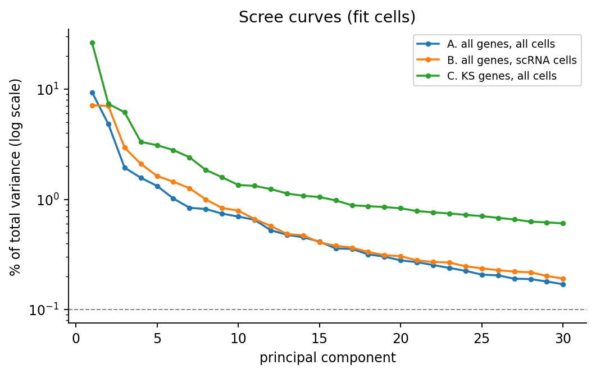
Figure 10. Scree curves for versions A, B and C (report figure; from pca.npz, array evr). x: principal component number. y: % of total variance of the fit cells (log scale). Dashed line: 0.1%.
evr saved by 02_pca.py: \(s_j^2/\lVert X_c\rVert_F^2\) on the fit cells.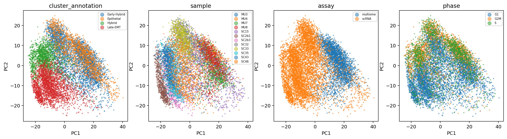
Figure 11. Version A fit cells on PC1 vs PC2 (project figure, results/all_main/pc1_pc2_by_label.png, from 02_pca.py). The same 9,600 cells coloured, left to right, by EMT state, tumour, assay and cell-cycle phase.
pc_top_genes.csv, A): PC1+ Krt14, AY036118, Nrg1, Camk1d, Krt5, Pcdh7, Dsp, Mast4; PC1− Lgals1, Dcn, Col1a2, Vim, Col1a1, S100a4. PC2+ basal keratins (Krt14, Krt5, Krt6a, Krt17); PC2− collagens (Fn1, Col1a1, Col3a1, Dcn).Camk1d, Pcdh7, Mast4 on the multiome side). PC2 is a cleaner EMT/proliferation axis within scRNA.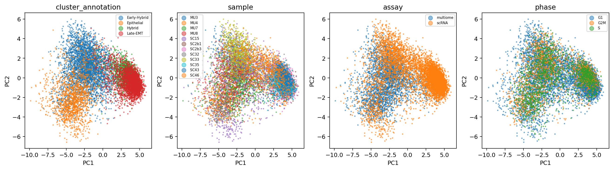
Figure 12. Version C (KS genes) fit cells on PC1 vs PC2 (project figure, results/ks_main/pc1_pc2_by_label.png). Same layout as Figure 11.
Vim, Lgals1, Col5a2, Sparc, Cald1 (mesenchymal); PC1− Sfn, Dsp, Perp, Itgb4, Klf5 (epithelial). PC2− carries Epcam, S100a14, Cdh1, Esrp1, the paper's epithelial-state markers.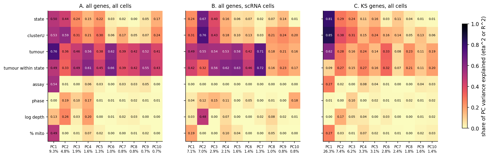
Figure 13. Share of each of PCs 1–10 explained by each factor (report figure, from pc_drivers.csv and pc_drivers_within_state.csv). Rows: EMT state, clusterU, tumour, tumour within state, assay, phase (η²); log depth, % mito (r²). Columns: PC (with % variance). Darker = larger share. Fit cells only.
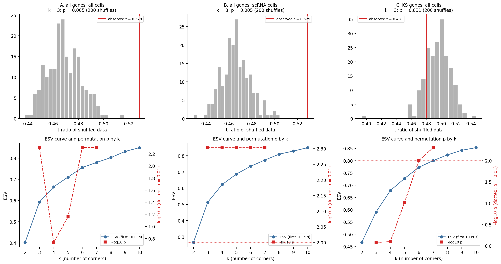
Figure 14. Permutation tests and ESV curves (report figure, from null_k3.npy, fit_k*.json, fit_summary.csv, esv_curve.csv). Top: histograms of the 200 shuffled t-ratios at k = 3; red line = observed t. Bottom: ESV in the first 10 PCs for k = 2–10 (blue, left axis) and −log₁₀ p for k = 3–7 (red, right axis; dotted line at p = 0.01).
| Version | k=3 t (null median; max) | p | k=4 p | k=5 p | k=6 p | k=7 p | elbow | k* |
|---|---|---|---|---|---|---|---|---|
| A | 0.528 (0.468; 0.516) | 0.005 | 0.184 | 0.070 | 0.005 | 0.005 | 4 | 3 |
| B | 0.529 (0.466; 0.504) | 0.005 | 0.005 | 0.005 | 0.005 | 0.005 | 4 | 3 |
| C | 0.481 (0.496; 0.547) | 0.831 | 0.796 | 0.095 | 0.010 | 0.005 | 5 | none |
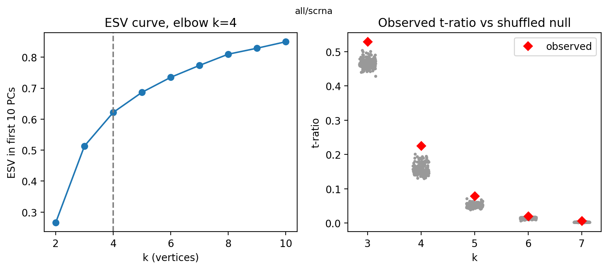
Figure 15. The pipeline's own summary for version B (project figure, results/all_scrna/fit_and_null.png, from 03_fit_and_test.py --summarize). Left: ESV curve with the elbow (dashed, k = 4). Right: for each k, grey dots = 200 shuffled t-ratios (jittered), red diamonds = observed t.
This is the same information as Figure 14, drawn by the pipeline. The red diamonds are above the grey clouds at every k, but the gap is visibly largest at k = 3–4.
All three figures have the same eight panels (04_describe_simplex.py). Panels 1–5: all 23,959 cells on PC1 vs PC2, coloured by EMT state, clusterU, tumour, assay and phase. Panel 6: KS EMT score (blue epithelial → red mesenchymal, clipped at the 2nd/98th percentiles). Panel 7: purity (yellow = specialist, dark = interior). Panel 8: for each state, % of its cells at each corner or interior (gap rule). Black dots and lines: fitted corners and edges. Panel 8 and every table in these files use all cells, including projected ones.
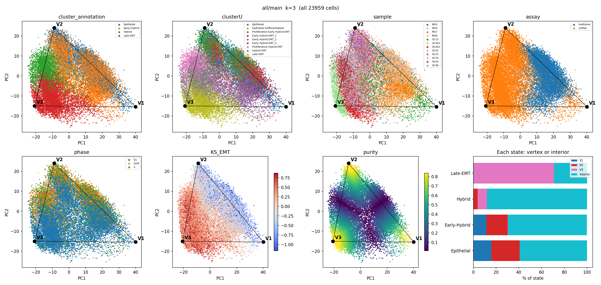
Figure 16. Version A, k = 3 (project figure, results/all_main/describe_k3/simplex_PC1_PC2.png).
Version A (all_main/describe_k3/summary.md): 73.1% of cells inside, 40.0% specialists.
| Corner | Specialists by state | Assay | Phase | Top marker genes | Top tumour (n tumours ≥ 5%) |
|---|---|---|---|---|---|
| V1 | Epi 36%, Early-Hyb 63% | 79% multiome | G1 80% | Camk1d, Maml2, Pcdh7, Frmd4b, Adgrl3, Magi1, Mast4 |
MU7 45% (3) |
| V2 | Epi 34%, Early-Hyb 62% | 90% scRNA | G2M 33%, S 25% | Krt14, Krt5, Krt6a, Krt17, Krtdap, Rbm3, Sfn |
SC32 36% (4) |
| V3 | Late-EMT 93% | 100% scRNA | G1 89% | Col3a1, Col1a1, Col1a2, Dcn, Bgn, Postn, Fn1 |
SC2b3 35% (5) |
Interpretation. V1 and V2 contain the same EMT states and differ mainly by assay and proliferation. V1's markers are long neuronal-type and signalling genes typical of nuclear RNA, so V1 is most plausibly a technology corner. V3 is the late-EMT corner and matches the paper's late-EMT markers (Col3a1, Postn) [1].
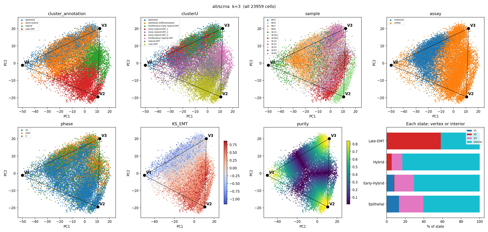
Figure 17. Version B, k = 3, the simplex chosen for focus (project figure, results/all_scrna/describe_k3/simplex_PC1_PC2.png). The shape was fitted on 6,400 scRNA cells; multiome cells (blue in the assay panel) were projected in afterwards.
Version B, restricted to the 14,059 scRNA cells (recomputed at report time from cells_in_simplex.csv.gz): 77.3% inside, 52.6% specialists.
| Corner | scRNA specialists by state | Phase (S + G2M) | Top marker genes | Notes |
|---|---|---|---|---|
| V1 | Epi 53%, Early-Hyb 44% | 34% | Camk1d, Pcdh7, Maml2, Frmd4b, Adgrl3 |
387 scRNA specialists, 94% from SC15; plus 985 multiome specialists (projected) |
| V2 | Late-EMT 94% | 10% | Col3a1, Col1a1, Col1a2, Dcn, Postn |
top tumour SC2b3 40%, 4 tumours ≥ 5% |
| V3 | Early-Hyb 60%, Epi 27%, Hybrid 13% | 54% | Krt14, Rbm3, Krt5, Krt6a, Krt17; proliferation genes Npm1, Nme2, H2afz |
top tumour SC32 37%, 6 tumours ≥ 5% |
Observations in the figure. V1 sits far out on a thin spike at PC1 ≈ −50, reached by few cells (mainly SC15, green in the tumour panel). The KS EMT panel is blue near V1 and V3 and red near V2, so the EMT axis runs between V3/V1 and V2. The purity panel shows dark (interior) bands along the lines that bisect the triangle, which is how the purity gap geometrically behaves.
Interpretation. Two corners are biologically meaningful: late EMT (V2) and proliferative epithelial/early-hybrid (V3). V1 is not an EMT state (§9.11). PC1's negative end includes Ext1, Adgrl3, Malat1, Aopep, Mast4, Pcdh7 and Gm42418 (all_scrna/pc_top_genes.csv). Correction (12 Oct): an earlier version of this report took Malat1, a nuclear-retained RNA, as support for a nuclear-RNA reading of V1. A direct check shows Malat1 is high in every tumour (median 4.2–5.6) and correlates only weakly with the V1 score (r = 0.19 across scRNA cells), so it is not evidence for that reading.
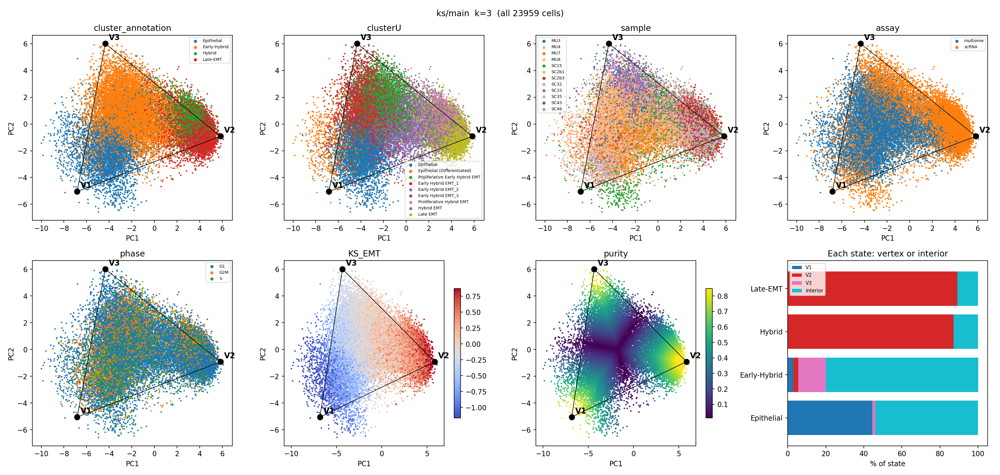
Figure 18. Version C (KS genes), k = 3 (project figure, results/ks_main/describe_k3/simplex_PC1_PC2.png). Not significant (p = 0.83).
Observation. Corners: V1 epithelial (86.5% of specialists; 61% multiome), V2 hybrid + late (97%), V3 early-hybrid (96%); 82.5% of cells inside; each corner's specialists spread over 5 tumours. The KS panel shows a smooth blue-to-red gradient along PC1. Interpretation. The tidy-looking label separation is what a continuum cut into a triangle would also give; the permutation test says the triangle is not better than shuffled data. This figure is the clearest illustration that clean label separation is not evidence for a simplex.
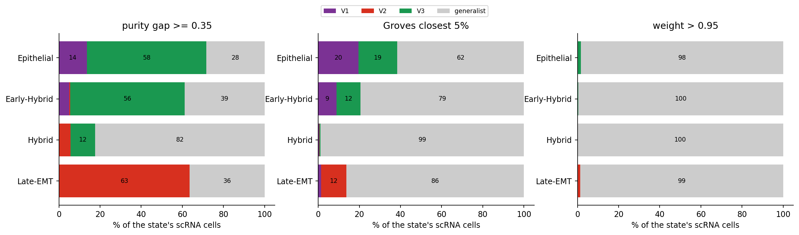
Figure 19. Each EMT state's scRNA cells by corner, under three specialist rules (report figure, from results/all_scrna/groves5_k3/cells_groves5.csv.gz; version B, k = 3; 14,059 scRNA cells). Purple V1, red V2, green V3, grey generalist/interior. Numbers are % of the state.
| State | Gap rule: V1 / V2 / V3 / interior | Closest 5%: V1 / V2 / V3 / generalist | weight > 0.95: specialists |
|---|---|---|---|
| Epithelial | 13.6 / 0 / 58.0 / 28.3 | 19.6 / 0 / 18.8 / 61.6 | 1.7 |
| Early-Hybrid | 5.0 / 0.5 / 55.6 / 38.9 | 9.0 / 0 / 11.6 / 79.4 | 0.4 |
| Hybrid | 0 / 5.7 / 11.9 / 82.4 | 0.4 / 0.3 / 0.5 / 98.8 | 0.0 |
| Late-EMT | 0.2 / 63.3 / 0 / 36.5 | 1.5 / 12.3 / 0 / 86.3 | 1.4 |
WALKTHROUGH.md §6.4 gave version B interior fractions computed over all cells, including projected multiome cells (e.g. epithelial 61% interior). On the fitted scRNA cells the gap-rule value is 28%. The multiome cells are mostly interior (79–98% per state) because their technical profile places them between corners.cells_in_simplex.csv.gz, scRNA cells, gap rule)| clusterU | V1 | V2 | V3 | interior |
|---|---|---|---|---|
| Proliferative Early Hybrid EMT | 0.2 | 0 | 83.9 | 15.9 |
| Epithelial (Differentiated) | 1.3 | 0 | 72.0 | 26.7 |
| Early Hybrid EMT_1 | 6.4 | 0 | 69.3 | 24.3 |
| Epithelial | 16.2 | 0 | 52.3 | 31.6 |
| Early Hybrid EMT_3 | 6.6 | 0 | 35.4 | 58.0 |
| Early Hybrid EMT_2 | 11.0 | 1.9 | 4.4 | 82.7 |
| Proliferative Hybrid EMT | 0.1 | 2.9 | 18.3 | 78.7 |
| Hybrid EMT | 0.2 | 22.5 | 1.5 | 75.8 |
| Late EMT | 0 | 78.2 | 0 | 21.8 |
Interpretation. The proliferative corner V3 is defined most strongly by Proliferative Early Hybrid EMT cells. Proliferative Hybrid EMT cells, the pre-registered test of the third corner, are mostly interior: their proliferation pulls them toward V3 and their hybrid EMT state toward V2. Early Hybrid EMT_2 is mostly interior too, consistent with (but not proof of) it being the "more advanced" early-hybrid substate; the mapping of _1/_2/_3 to the paper's EMT-I/II was not verified (§2.5).
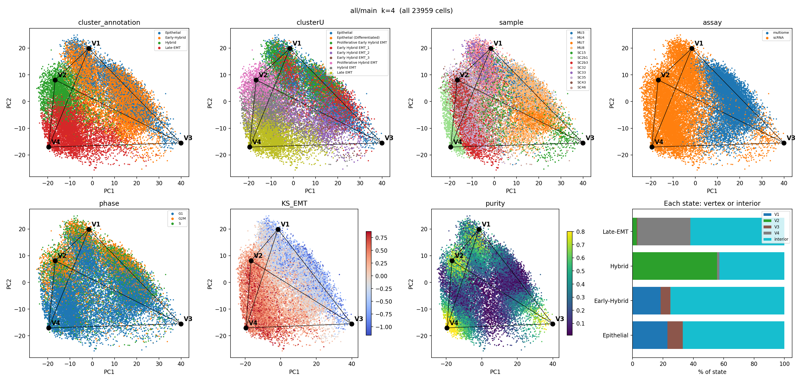
Figure 20. Version A, k = 4, PC1–PC2 view (project figure). Not significant (p = 0.18). The tetrahedron lives in PC1–PC3; this view flattens it.
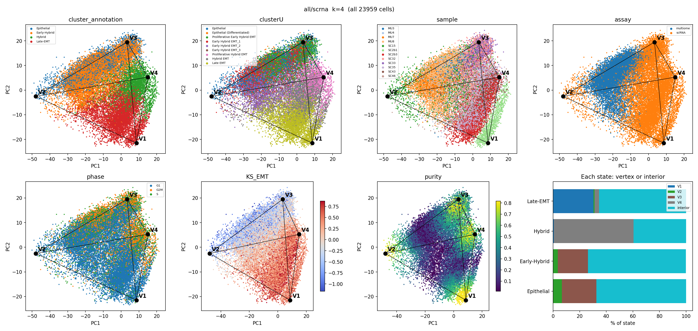
Figure 21. Version B, k = 4, PC1–PC2 view (project figure). p = 0.005, but k = 4 was not chosen by the pre-registered rule.
| Version | Corners (specialists, all cells) | Inside |
|---|---|---|
| A, k=4 | V1 basal epithelial/early-hybrid (keratins; 76% scRNA); V2 Hybrid 92% (Lgals1, Csrp2, Tm4sf1, Vim; 46% G2M); V3 nuclei corner (67% multiome, long genes); V4 Late-EMT 97% (collagens) |
— |
| B, k=4 | V1 Late-EMT 98%; V2 nuclei-like/SC15 (52% of its specialists SC15); V3 epithelial/early-hybrid; V4 Hybrid 91% (44% G2M) | 30.8% |
Interpretation. Allowing a fourth corner separates a Hybrid, cycling corner in both versions. This is the closest the data come to the pre-registered "proliferative hybrid" corner. In version B only 31% of cells lie inside the tetrahedron, so the k = 4 shape outlines the cloud loosely. Because k = 4 was not chosen, this is exploratory.
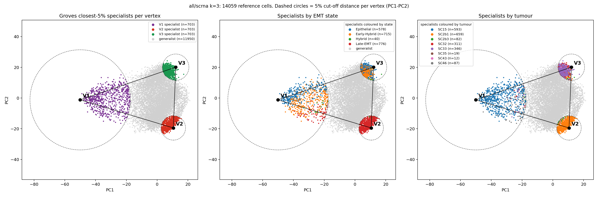
Figure 22. Version B, k = 3, with Groves closest-5% specialists (project figure, results/all_scrna/groves5_k3/triangle_groves5.png, from 06_groves_specialists.py). 14,059 scRNA cells on PC1 vs PC2. Grey: generalists. Dashed circles: each corner's 5% cut-off distance. Left: specialists coloured by corner (703 each). Middle: by EMT state. Right: by tumour.
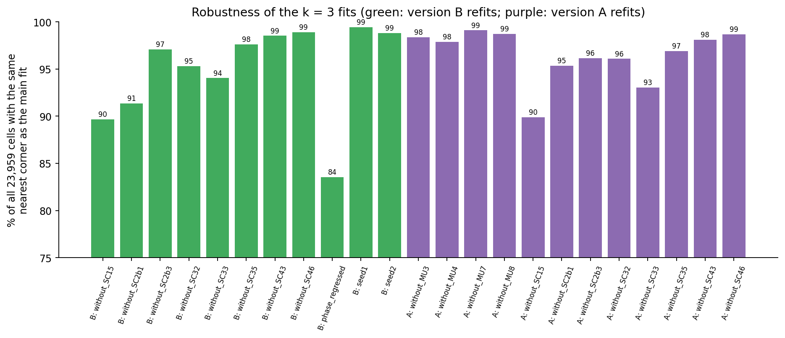
Figure 23. Agreement of each refit with its main k = 3 fit (report figure, from results/*/robustness/k3_*.csv). Bar height: % of all 23,959 cells whose (matched) nearest corner is unchanged. Green: version B refits (8 leave-one-tumour-out, cell-cycle regression, 2 new subsamples). Purple: version A leave-one-tumour-out (12).
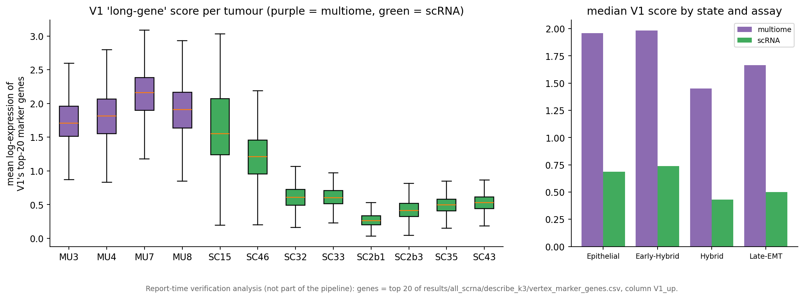
Figure 24. The V1 "long-gene" score (report figure; report-time verification analysis). Score = each cell's mean log-expression of the top-20 V1 marker genes of version B (vertex_marker_genes.csv, column V1_up: Camk1d, Pcdh7, Maml2, Frmd4b, Adgrl3, AY036118, Pard3, Magi1, Ext1, Mast4, Zswim6, Aopep, Atxn1, Ptpn13, Hivep2, Macf1, Cmss1, Efna5, Ldlrad4, Maml3). Left: per tumour (box = interquartile range, line = median, whiskers to 1.5 IQR). Right: median by state and assay.
| Tumour | MU3 | MU4 | MU7 | MU8 | SC15 | SC46 | SC32 | SC33 | SC2b1 | SC2b3 | SC35 | SC43 |
|---|---|---|---|---|---|---|---|---|---|---|---|---|
| Median score | 1.71 | 1.81 | 2.16 | 1.91 | 1.55 | 1.21 | 0.61 | 0.61 | 0.26 | 0.41 | 0.50 | 0.53 |
Learning checkpoint 9
Malat1 is not evidence; see the correction in §9.5.)Each decision is classified by its basis: [P] justified explicitly in the project (pre-registration, README, run discussion), [L] inherited from a published method, [C] inferred from the code with no written justification, [W] weakly justified or questionable.
| Decision | Choice made | Basis | Main alternatives | How the alternative could change results |
|---|---|---|---|---|
| Data source | Authors' Seurat object, 23,959 labelled cells | [P] only processed source on GEO | Request raw counts / full 54,081-cell atlas | More cells and tumours; independent QC; could reveal why 54,081 ≠ 23,959 |
| Gene detection filter | ≥ 1% of cells | [C] | HVG selection (paper used Seurat HVGs); stricter/looser thresholds | HVGs would emphasise high-variance genes, possibly strengthening tumour fingerprints or EMT |
| Mito/ribo genes | removed (regex missed Rplp0/1/2, Rpsa) |
[P] with a [W] implementation gap | keep them ("arm A", planned, not run) | Could add a biomass/energy axis [7], or more assay signal |
| Normalisation | CP10k + log1p | [L] standard (Scanpy [15]) | scran, SCTransform, Pearson residuals | Better depth correction could weaken the depth–PC2 correlation in B |
| Imputation | none | [P] "honest raw shape first" | MAGIC (Groves [8]; thesis's Pal fits) | Sharper corners and higher t, but a less comparable null (Ch. 11) |
| Gene scaling | centred, not scaled | [L] Hausser [7] | z-score genes | Low-expressed noisy genes gain weight |
| Batch correction | none in main fit | [P] to see batch, then test it | Harmony / scANVI embeddings (paper's own space) | Would shrink tumour fingerprints and the V1 axis; may also remove tumour-linked EMT biology; scANVI is label-guided (circular) |
| Gene set | all genes (A, B) and KS (C) | [P] | HVGs; paper's state marker genes; SCENIC regulons | Changes what "axes" exist; C already shows the answer depends on it |
| Fit cells | ≤ 800 per tumour | [P] | all cells; balance by state | Big tumours would dominate corners |
| scRNA-only fit (B) | added after seeing A | [P] but not pre-registered | multiome-only (4 tumours, mostly epithelial); assay as covariate | — |
| PCA solver | exact (gram/SVD) | [P] validated | randomized | No change for PCs 1–10 (checked) |
| PCs used for fit | k−1 | [L] ParTI [6], engine | fit in more PCs, then project | Corners could use more information; t-ratio needs k−1 dims |
| PCHA δ | 0 | [L] thesis engine | δ > 0 (ParTI default practice) | Corners outside the cloud; higher t; more cells inside |
| Starts | 15 real / 5 null | [L] thesis breast scripts | equal starts | No effect at k = 3 (checked); unchecked for k ≥ 4 |
| Null model | shuffle each PC independently | [L] ParTI [6] | within-tumour shuffles; bootstrap stability | A within-tumour null would ask whether the triangle exists beyond tumour fingerprints |
| Shuffles | 200 | [P] compute budget | 1,000 (Groves) | Finer p; same conclusion where margins are large |
| ESV space | first 10 PCs | [C] fixed choice | the 0.1%-rule dimension (49–108 PCs) | Elbow could move |
| k rule | smallest p < 0.01 ≤ elbow | [P] pre-registered | bootstrap stability; cross-validation | Could choose k = 4, which isolates the hybrid corner |
| Specialist rule | gap ≥ 0.35 (main), closest 5%, w > 0.95 | [P] gap is a thesis convention; others [L] Groves | — | Specialist fractions change by an order of magnitude (§9.6) |
| Corner matching in refits | by cell assignments (Hungarian) | [C] | by coordinates (match_vertices, unused) |
Cell-based is more meaningful across different PC spaces |
| Cell-cycle handling | phase-mean regression (sensitivity only) | [P] | score regression; remove cycling genes | Might move V3 further |
Decisions that deserve the most scrutiny: (1) no batch handling in the primary fit while tumour fingerprints are large; (2) the specific null model; (3) δ = 0 together with noisy data (many cells outside); (4) the scRNA-only focus chosen after seeing results.
Learning checkpoint 10
| Claim | Kind | Strength |
|---|---|---|
| "On all genes, the PC1–PC2 cloud is more triangular than independent PCs" | statistical evidence | Moderate: p at the floor of 200 shuffles; modest effect (0.53 vs null max 0.50–0.52) |
| "Late-EMT cells occupy one corner with collagen/matrix genes" | computational + observation | Strong: 94% purity, 4 tumours, survives all refits; matches paper's markers |
| "Epithelial/early-hybrid proliferating cells occupy another corner" | computational | Strong for location; "proliferation" supported by phase labels and genes |
| "V1 is a nuclear/technical axis" | interpretation | Moderate: assay pattern, long genes, whole-sample shift; not tested at read level (Malat1 withdrawn as evidence) |
| "Hybrid cells are generalists" | computational | Robust across rules; interpretation as "multi-task" is a hypothesis |
| "Cells perform tasks at the corners (e.g. proliferation, matrix remodelling)" | hypothesis | Not tested: no functional data |
| "Cells move between corners / EMT proceeds along an edge" | not supported | Snapshot data; geometry is not time |
| "A Pareto trade-off shapes EMT" | hypothesis | The test is compatible with but does not establish it |
The k = 3 result (two biological corners plus V1) is also compatible with:
None of these was ruled out.
Learning checkpoint 11
| Check | Result | File |
|---|---|---|
| Matrix/metadata alignment | assertions passed | 01_build_anndata.py |
| Projection reproduces fit scores | assertion passed | 02_pca.py |
| Gram vs full SVD (A) | identical to ~10⁻¹³ | run log (§6.2) |
| Randomized vs exact PCA | |r| ≥ 0.9996, PCs 1–10, all versions | pca_info.json |
| PCHA starts succeeded | 15/15 for every real fit | fit_k*.json |
| Null fits succeeded | 3,000/3,000 | null_k*.npy |
| Leave-one-tumour-out (B 8, A 12) | 89.7–99.1% agreement | robustness/k3_loto.csv |
| Cell-cycle regression (B) | 83.5% | robustness/k3_nophase.csv |
| New subsamples (B, seeds 1–2) | 98.8%, 99.4% | robustness/k3_seed.csv |
| Check | Result |
|---|---|
| p-values recomputed from saved null arrays | match fit_summary.csv exactly for all 15 (version × k) |
| 5 vs 15 PCHA starts at k = 3 | identical t-ratios (6 seeds, A and B) |
| Cell counts, tumour × state table | match metadata |
| Gene filter result | 14,502 genes; Rplp0/1/2, Rpsa remain |
| QC by assay and tumour | multiome median % mito 13.4 vs scRNA 4.6 (corrects an earlier note) |
| Version B tables on scRNA cells only | recomputed; differ from all-cell tables (§9.6) |
| V1 long-gene score per tumour | high in all multiome and in SC15, SC46 |
| Paper claims (QC, states, trajectory, cycling) | verified in the PDF text; "cycling hybrid branch" not in paper |
| Groves specialist definitions | verified in the PDF text |
| PCHA algorithm details | read from installed py_pcha source |
Learning checkpoint 12
What the geometry says. On the whole transcriptome, LKPR SCC tumour cells form a cloud whose two largest axes give a triangle that is more pronounced than in shuffled data. Two corners are coherent biology: a proliferative epithelial/early-hybrid corner (basal keratins, S/G2M) and a late-EMT corner (collagens, fibroblast-like genes). The third corner is a long-gene/nuclear-RNA direction shared by the multiome samples and two scRNA tumours. Hybrid EMT cells, and the proliferative hybrid cluster, are interior mixtures. Restricted to EMT genes, the cloud is a continuum without a significant simplex.
How this relates to the paper. Pérez-González et al. describe a branching trajectory from epithelial through hybrid to late EMT, with a second branch ending at hybrid EMT, and cycling cells in epithelial, early-hybrid and hybrid states but not late EMT [1]. The geometry here is consistent with that: the late-EMT corner is non-cycling; proliferation sits on the epithelial/early-hybrid side; hybrid cells lie between. At k = 4, a cycling hybrid corner appears, which echoes the paper's statement that hybrid states can be highly proliferative [1, 3]. The archetype view adds one thing the clustering view does not: hybrid cells are not extreme on any axis; they are mixtures between proliferative-epithelial and late-EMT profiles.
How this relates to Pareto theory. Hausser et al. found that cancer tasks include cell division and invasion/tissue remodelling [7]. The two biological corners here resemble those two tasks: division (keratin-rich proliferating cells) and matrix remodelling (collagen-producing late-EMT cells). That resemblance is suggestive but not tested (no task gene-set enrichment, no functional data). With only two biological corners, the data are equally consistent with a one-dimensional EMT continuum that is bent by proliferation.
How this relates to the thesis's breast results. As in the Pal analysis, the most extreme cells at corners come from one or two tumours/patients. Leave-one-out showed that corners survive removal of any single tumour, which is stronger evidence than the breast case provided. But the tips of the corners are still tumour-specific.
What is genuinely new here. (i) A tested simplex for this dataset with an explicit null; (ii) quantification of tumour fingerprints beyond EMT state; (iii) the identification of a technical (nuclear) axis in the integrated data that would otherwise be read as a state; (iv) a rule-robust statement that hybrid EMT cells are generalists.
Learning checkpoint 13
Superseded in part. See the Addendum (follow-up analyses, 12 Oct 2026) for the revised conclusions; the answers below describe the state before those analyses.
auc_mtx in the object; not yet exported).04_describe_simplex.py).Keep: pre-registration; tumour balancing; exact PCA with validation; the shared module; resumable permutation runs; leave-one-tumour-out as a primary check; multiple specialist rules side by side.
Change: fix the ribosomal regex; save the R export script; make script 04 report reference cells separately from projected cells; add a within-tumour null; compute bootstrap corner uncertainty; decide the scRNA-only analysis in advance (assay was a known confounder); describe the ESV dimension choice in the code docstrings.
Learning checkpoint 14
QUESTION: do EMT states fill a task simplex?
|
+----------------------------+-----------------------------+
| | |
BIOLOGY DATA METHOD
EMT spectrum 23,959 tumour cells Pareto task inference
(Epi > EarlyHyb > 12 tumours, 2 assays (Shoval, Hart, Hausser,
Hybrid > Late) log-CP10k, 14,502 genes Groves)
| | |
| confounding: tumour = assay PCA -> k-1 PCs -> PCHA
| = state mix -> t-ratio vs shuffles
| | -> k* (pre-registered)
+-------------+--------------+-------------+---------------+
| |
GEOMETRY RESULT DIAGNOSTICS
k*=3 (all genes); none (KS) tumour fingerprints; depth;
V2 late EMT | V3 prolif epi V1 long-gene/nuclear axis
V1 technical | hybrid interior leave-one-out stable
|
INTERPRETATION (tentative)
2 biological corners ~ division vs matrix remodelling;
hybrid = generalist mixture; tips are tumour-specific
| Term | Meaning in this project |
|---|---|
| Archetype / corner / vertex | A corner of the fitted simplex; in Pareto theory, the phenotype optimal for one task. Named V1, V2, … per fit. |
| Archetypal analysis | Statistical method representing data as convex mixtures of archetypes that are convex mixtures of data [11]. |
| Assay | Measurement technology: scRNA (whole cells) or multiome (nuclei, RNA + ATAC). |
| Barycentric weights | Coordinates of a point as a weighted mix of the corners; sum to 1; negative outside. |
| CP10k | Counts per 10,000: library-size normalisation. |
| Confounding | Two factors varying together so their effects cannot be separated. |
| Convex hull | Smallest convex shape containing all points. |
| δ (delta) | PCHA parameter allowing corners outside the hull; 0 here. |
| EMT | Epithelial-to-mesenchymal transition. |
| ESV | Explained sample variance: fraction of variance reproduced by the simplex model. |
| η² (eta squared) | Fraction of a variable's variance explained by a grouping. |
| FDR / q-value | False discovery rate control for many tests (Benjamini–Hochberg). |
| Fit cells | Cells used to define PCA and corners (9,600 in A; 6,400 in B). |
| Generalist / interior | A cell not called a specialist; a mixture of corners. |
| Gram method | Exact PCA via eigenvectors of the cells × cells matrix. |
| Hungarian algorithm | Optimal one-to-one matching, used to align corners between fits. |
| LKPR | Lgr5-CreER; Kras^G12D; Trp53^fl/fl; Rosa26-YFP mouse model. |
| MAGIC | Diffusion-based imputation of single-cell data [14]; planned, not run. |
| Multiome | 10x assay measuring RNA and chromatin accessibility in the same nucleus. |
| Null model | Way of generating data without the structure of interest; here independently shuffled PCs. |
| Pareto front | Set of phenotypes that cannot improve at one task without losing at another. |
| PCA / PC / loading / score | Principal component analysis; a direction; its gene weights; a cell's coordinate. |
| PCHA | Principal Convex Hull Analysis, the fitting algorithm [12]. |
| Permutation p-value | (1 + #null ≥ observed)/(1 + #null). |
| Pre-registration | Writing predictions and decision rules before analysis. |
| Projected (guest) cells | Cells placed into a fit they did not help define. |
| Pseudoreplication | Treating non-independent observations (cells of one tumour) as independent. |
| Purity | Largest minus second-largest weight. |
| Reference cells | Population on which the 5% cut-offs are set (scRNA cells for B). |
| Simplex | Convex hull of k points in k−1 dimensions. |
| Specialist | Cell near a corner; by gap ≥ 0.35, closest 5%, or weight > 0.95. |
| t-ratio | Simplex volume / data hull volume. |
| Tumour fingerprint | Expression differences between tumours not explained by EMT state. |
| UMI | Unique molecular identifier; counts molecules. |
| Version A / B / C | All genes all tumours / all genes scRNA tumours / KS genes all tumours. |
Imagine every tumour cell as a dot on a map. Where a dot sits depends on which of its genes are on and how strongly. Cells that are alike sit close together.
The scientists who made this dataset had already sorted the cells into four groups along a path called EMT. At one end, cells are "epithelial": they stick together in sheets like normal skin. At the other end they are "late EMT": loose, fibroblast-like cells that make collagen. In between are "early hybrid" and "hybrid" cells that mix features of both.
There is a theory that when cells must juggle several jobs that compete, for example dividing quickly versus remodelling the tissue around them, the best possible cells form a triangle on the map. The corners are the cells that do one job best. Cells in the middle compromise.
We asked whether these tumour cells form such a triangle. We squeezed the 14,502-gene map down to its two most informative directions, drew the best triangle around the cells, and checked whether the real cells fit a triangle better than scrambled cells do. They did, a little.
Then we looked at what sits at each corner. One corner held the collagen-making late-EMT cells. One held dividing epithelial-like cells. The third corner, surprisingly, was not an EMT state at all. It held cells whose RNA looks like RNA from cell nuclei. That is a signature of how some samples were measured, not of what the cells are doing. Hybrid cells sat in the middle: they are mixtures, not specialists.
When we used only the genes known to track EMT, there was no triangle at all, just a smooth path from epithelial to mesenchymal. So the triangle needs extra ingredients beyond EMT: cell division, and a measurement artefact.
We checked that no single tumour was responsible by removing tumours one at a time; the triangle stayed. But the most extreme cells at each corner came mostly from one or two tumours, so "corner" cells partly reflect individual tumours.
The honest summary: in these tumours, EMT looks more like a path than a three-way trade-off; proliferation adds a bend; and one apparent corner is technical. Hybrid cells are in-between cells.
Q1. Why should I believe there is a triangle at all? On all genes, the observed t-ratio (0.53) exceeded all 200 shuffled datasets in two versions (p = 0.005), and the triangle's cell assignments were 90–99% stable to leaving out any tumour. But the effect is modest, and the null only rules out independent PCs, so I describe it as "more triangular than structureless data", not as proof of a Pareto front.
Q2. Isn't the third corner just batch? Probably technical, yes. Its marker score is high in all four multiome (nuclei) samples and in two scRNA tumours, almost independent of EMT state, and it shifts whole samples rather than one state. I have not proven it at the read level; I would test intronic fractions and gene length next.
Q3. Why did you fit on scRNA cells only? After the all-cell fit showed a multiome corner, fitting on one assay removes that source of variation from the axes. It was not pre-registered, I say so, and it gives the same three corner types as the pre-registered fit.
Q4. Why not batch-correct with Harmony or use the paper's scANVI space? To see batch effects rather than hide them. scANVI was trained with labels, which would make finding labelled states at corners circular. A Harmony version is a planned comparison.
Q5. Why not use MAGIC like Groves? To get the raw shape and a fair null first. MAGIC smooths cells towards neighbours and makes the shuffled null less comparable. It is the next planned run.
Q6. How did you choose k? By a rule written before fitting: the smallest k with permutation p < 0.01 at or before the ESV elbow. That gave k = 3 for A and B and none for C.
Q7. Why are k = 6 and 7 significant everywhere, even for KS genes? High-dimensional real data almost always have some dependence between PCs that shuffling destroys; at high k this is enough to beat the null. That is why the rule ignores k beyond the elbow.
Q8. What does "specialist" mean, and why three definitions? Gap ≥ 0.35 (thesis convention), Groves's closest 5% (Fig. 3E) and weight > 0.95 (Groves Methods). They differ by an order of magnitude in counts, so I only rely on conclusions that hold under all three (hybrid cells least specialised).
Q9. Are the corners just tumours? No single tumour makes a corner (leave-one-out), but the most extreme 5% at each corner is 82–92% one tumour (or two for V3). Broad corner regions are multi-tumour; tips are tumour-specific.
Q10. Does this show cells transition between corners? No. These are snapshots. Geometry shows where cells are, not where they go.
Q11. How do your results relate to the paper's trajectory? Consistent: late EMT is a non-cycling extreme, proliferation is on the epithelial/early-hybrid side, hybrids lie between. At k = 4 a cycling hybrid corner appears, echoing the paper's hybrid branch. Note that the paper does not call that branch "cycling"; that was our earlier misreading.
Q12. What is the weakest part of the analysis? The confounding of tumour, assay and state, together with a null model that does not account for tumour structure.
Q13. How reproducible is it? Deterministic given the seeds; all outputs are saved; p-values were recomputed from the saved nulls and matched. The R export step was not saved as a script.
Q14. What would change your conclusions? A batch-aware null that the triangle fails; V1 shown to be biological (e.g. a quiescent state confirmed in tissue); or a MAGIC/Harmony analysis giving different corners.
Project_1/.venv, Python 3.9 (macOS, Apple M2, 16 GB RAM): numpy 1.26.4, scipy 1.13.1, scikit-learn 1.6.1, pandas 2.3.3, matplotlib 3.9.4, anndata 0.10.9, scanpy 1.10.3, py-pcha 0.1.3, statsmodels 0.14.6 (not used by the pipeline). pypdf 6.20 was installed into the venv during the run, only to read PDFs. The report build used markdown and pymdown-extensions, installed into a temporary folder outside the project, plus Google Chrome (headless) and MathJax 3.2.2 from a CDN.
| Parameter | Value | Where |
|---|---|---|
| Gene detection | ≥ 1% of cells | 01_build_anndata.py |
| Normalisation | CP10k, log1p | 01_build_anndata.py |
| Fit cells per tumour | ≤ 800, seed 0 | scc_common.py |
| PCs stored | 50 (evr: 200) | scc_common.py, 02_pca.py |
| k | 3–7 | scc_common.py |
| PCHA | δ = 0; 15 starts (real), 5 (null); conv 10⁻⁶; maxiter 500 | scc_common.py, src/archetypes.py |
| Shuffles | 200 per k | run_fits.sh |
| ESV | k = 2–10 in first 10 PCs, best of 5 | 03_fit_and_test.py |
| Specialist | gap ≥ 0.35; closest 5%; w > 0.95 | scc_common.py, 06_groves_specialists.py |
| Enrichment | 10 distance bins; BH q < 0.1; fold ≥ 1.5 reported | 04_describe_simplex.py |
See REPRODUCIBILITY_GUIDE.md for exact commands, expected runtimes and expected key numbers.
| # | Discrepancy | Effect |
|---|---|---|
| D1 | Pre-registration's "cycling hybrid branch" is not in the paper | Prediction basis misattributed |
| D2 | Ribosomal regex misses Rplp0/1/2, Rpsa |
4 ribosomal genes kept; they load on B's PC1 |
| D3 | 02_pca.py docstring says the 0.1% rule is used for ESV; ESV uses 10 PCs |
Documentation only |
| D4 | WALKTHROUGH.md says nuclei have less mitochondrial RNA; here multiome has more |
Corrected in report |
| D5 | Version B tables in script 04 include projected multiome cells | Recomputed for scRNA cells |
| D6 | "Multiome cells pile onto V1" holds only for the closest-5% rule | Restated |
| D7 | 23,959 cells vs paper's 54,081; 4 multiome samples vs 3 in paper Methods | Unexplained |
| D8 | Version A pca.npz from full SVD, others from gram |
No effect (verified equal) |
| D9 | match_vertices in scc_common.py is unused |
Dead code |
| D10 | First version of this report cited Malat1 as evidence that V1 is nuclear RNA; Malat1 does not track V1 (r = 0.19) |
Withdrawn (§9.5, §9.11, §11.1, Q2) |
| D11 | First version concluded a k = 3 triangle with two biological corners; follow-ups (Addendum) show the strong p-value came from the V1 axis | Conclusions revised (Addendum, §1.5 note) |
Path (under Mouse_SCC/results/) |
Content |
|---|---|
PREREGISTERED_PREDICTIONS.md |
predictions, 2026-10-10 21:24 |
<run>/pca.npz, pca_info.json |
PCA of each version |
<run>/pc_drivers.csv, pc_drivers_within_state.csv, pc_top_genes.csv |
PC diagnostics |
<run>/archetypes_k*.npy, null_k*.npy, fit_k*.json, fit_summary.csv, esv_curve.csv |
fits and tests |
<run>/describe_k*/ |
label tables, per-cell weights, markers, enrichment, figures |
<run>/robustness/k3_*.csv |
refits |
all_scrna/groves5_k3/ |
Groves specialists |
<run>/log_*.txt |
printed output of every step |
This chapter was added after the report was first written. It reports three follow-ups that the first version proposed (Ch. 11.4, 14.2), and it revises the main conclusion. Scripts: codes/07_regress_v1.py, codes/08_within_tumour.py, codes/09_cross_projection.py. All three use version B's settings (all genes; scRNA fit cells where a pooled fit is made). They were designed after seeing the first results, so they are exploratory, not pre-registered.
Why. Corner V1 tracked a whole-sample shift (§9.11). If it is technical, it should be removed before asking whether the EMT states form a triangle.
Method (07_regress_v1.py). Score per cell \(s_i\) = mean log-expression of V1's top-20 marker genes (version B, k = 3). On the 6,400 version-B fit cells, for each gene \(g\) the slope \(\beta_g = \mathrm{cov}(x_g, s)/\mathrm{var}(s)\). Every cell then gets
which removes the part of each gene that moves linearly with the score. PCA, PCHA (k = 3–7) and 200-shuffle tests were then rerun exactly as in version B (results/all_scrna_noV1/).
Effect on the axes. The V1 score explained 75% of PC1 before and 0% after. The new PC1 is keratins vs collagens (EMT state η² = 0.60, up from 0.24); PC2 is keratins vs Csrp2, Lgals1, Tm4sf1 (hybrid genes). The new PC1 correlates with log depth (r² = 0.51), and tumour identity still explains 31–72% of PCs 1–6 within states.
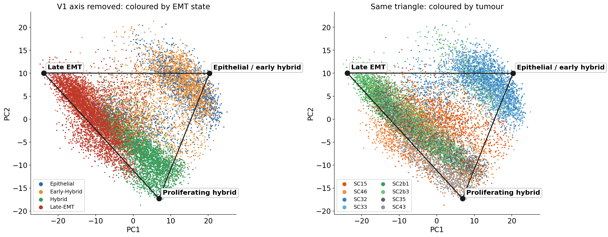
Figure 25. The k = 3 triangle after removing the V1 axis (scRNA cells; from results/all_scrna_noV1/; drawn by make_slide_figures.py). Left: coloured by EMT state. Right: the same triangle coloured by tumour. Corners: late EMT, proliferating hybrid, epithelial / early hybrid.
Corners (scRNA cells, gap rule).
| Corner | Specialists by state | Dividing (S + G2M) | Top genes | Top tumour |
|---|---|---|---|---|
| Late EMT | Late-EMT 94% | 12% | Col3a1, Col1a1, Postn, Dcn |
SC2b3 47% (4 tumours ≥ 5%) |
| Proliferating hybrid | Hybrid 89% (Proliferative Hybrid EMT 63%) | 77% | Lgals1, Csrp2, Tm4sf1, Vim, S100a4 |
SC35 30% (4) |
| Epithelial / early hybrid | Early-hybrid 66%, epithelial 34% | 42% | Krt14, Krt5, Krt6a, Krt17 |
SC32 47% (3) |
Is the hybrid corner just a cell-cycle corner? No. Dividing epithelial cells go to the epithelial corner (71%), not the hybrid one (1%); dividing late-EMT cells reach it 10% of the time. Within hybrid cells, dividing ones reach it more often (70% vs 34%). The corner is specifically proliferating hybrid cells. Multiome cells, projected in, now sit 89% in the interior.
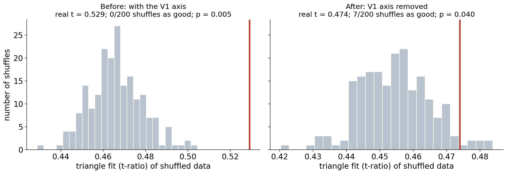
Figure 26. The k = 3 permutation test before and after removing V1 (from null_k3.npy and fit_k3.json in all_scrna and all_scrna_noV1). Grey: t-ratios of 200 shuffled datasets. Red line: real t-ratio.
| k | Real t | Shuffled median / 95th pct / max | p |
|---|---|---|---|
| 3 | 0.474 | 0.455 / 0.471 / 0.484 | 0.040 |
| 4 | 0.160 | 0.180 / 0.201 / 0.207 | 0.98 |
| 5 | 0.047 | 0.055 / 0.063 / 0.079 | 0.995 |
| 6 | 0.016 | 0.014 / 0.017 / 0.021 | 0.18 |
| 7 | 0.006 | 0.003 / 0.004 / 0.005 | 0.005 |
ESV elbow at k = 5. p-values recomputed from the saved shuffles; they match.
Reading. The predicted epithelial / proliferating-hybrid / late-EMT triangle appears once the technical axis is gone, but the evidence that the cloud is a triangle is now weak: p = 0.04 (7 of 200 shuffles as good), which passes Groves' p < 0.05 but fails the pre-registered p < 0.01. Under the pre-registered rule there is no k. Most of the original strong result (p = 0.005) came from the V1 lobe.*
Limits. The score was built from the same data. Within SC15 it is higher in epithelial cells (2.14) than hybrid cells (1.00), so the regression may remove some real signal. Linear regression cannot remove a non-linear technical effect.
Why. In the pooled triangle, late-EMT cells of mesenchymal tumours reached the late corner (SC2b1 73%, SC2b3 68%) but those of mixed tumours mostly did not (3–13%). Is the triangle a within-tumour structure or a product of pooling different tumours?
Method (08_within_tumour.py). For SC15 (1,576 cells), SC32 (1,910) and SC46 (1,519), the three tumours with substantial numbers of most states: V1-corrected expression (Eq. 11), the tumour's own PCA, PCHA k = 3 and 4, 200 shuffles. Corners are compared across tumours by gene signature: for each corner, mean expression in the 10% of the tumour's cells nearest it minus the rest (14,502 genes), correlated (Pearson r) with the signatures of the pooled corners from A.1.
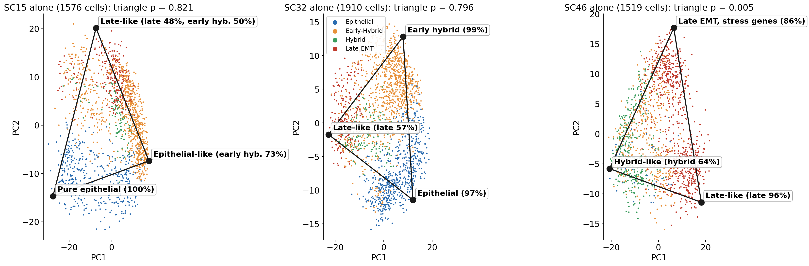
Figure 27. Triangles fitted inside single tumours (from results/within_tumour/). Each panel: one tumour's cells on its own PC1–PC2, coloured by EMT state, with its k = 3 triangle. Labels: what each corner's genes match, and its state mix.
| Tumour | k=3 p | k=4 p | Late-like corner (r with pooled late) | Third corner |
|---|---|---|---|---|
| SC15 | 0.82 | 0.63 | yes, r = 0.71 | pure epithelial group (r ≈ 0 with all pooled corners) |
| SC32 | 0.80 | 0.015 | yes, r = 0.69 | epithelial (97%) vs early hybrid (99%) split |
| SC46 | 0.005 | 0.59 | yes, r = 0.66 | hybrid-like, r = 0.70 (hybrid 64%, 87% dividing) |
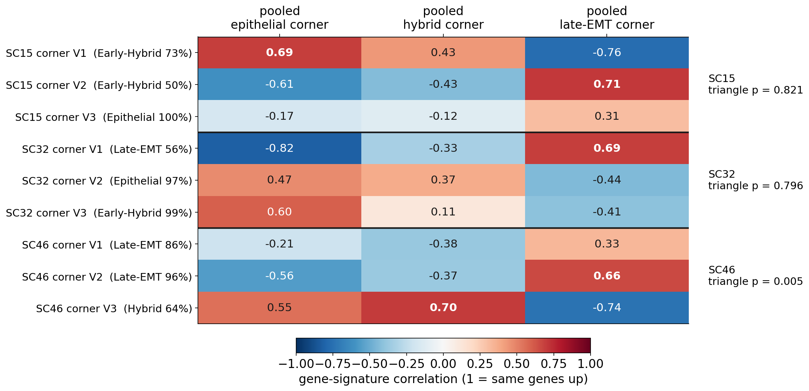
Figure 28. Gene-signature correlations between within-tumour corners (rows) and the pooled corners (columns) (from corner_signature_correlation.csv). 1 = the same genes are up near both corners.
Reading. A late-EMT-like corner with the same genes is found in every tumour. A significant triangle holds in only one of three (SC46), the only one with a hybrid-like corner. SC46 has 44 epithelial cells, so its triangle cannot contain an epithelial corner; it is late / late-stress / hybrid. The k = 4 result for SC32 (p = 0.015) was not examined further.
Method (09_cross_projection.py). Host = SC32 (largest mixed tumour). Its k = 3 within-tumour fit was frozen; all 23,959 cells (V1-corrected) were centred on SC32's gene means and projected on SC32's PCs, without per-tumour rescaling, so each tumour keeps its fingerprint.
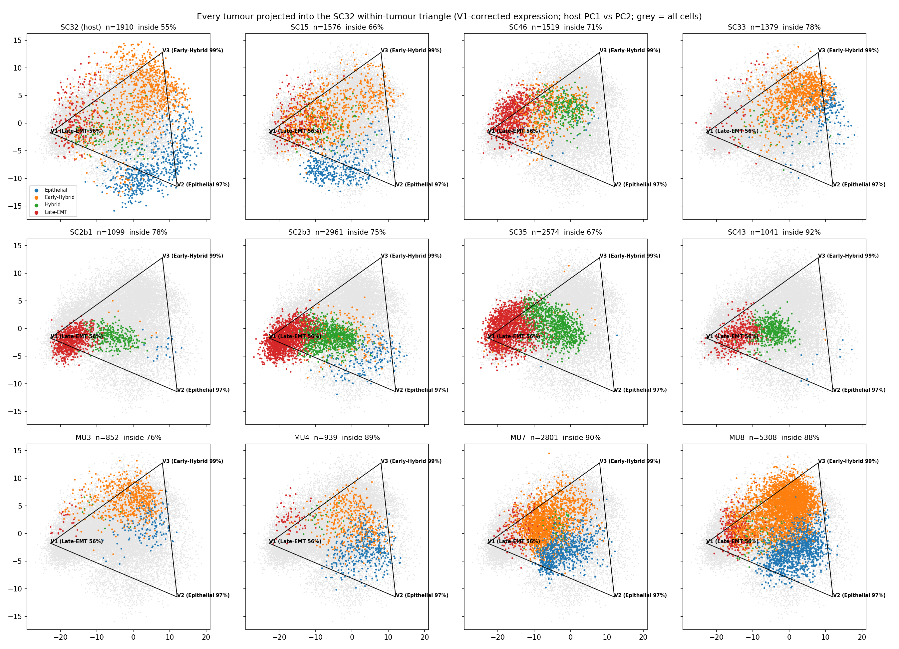
Figure 29. Every tumour in SC32's triangle (from results/cross_projection_SC32/guests_in_host.png). One panel per tumour; grey = all cells; colour = EMT state; corners labelled by SC32's own corner composition.
| Cells (all guests) | At SC32's late corner | At its epithelial corner | At its early-hybrid corner | Interior |
|---|---|---|---|---|
| Late-EMT, per tumour | 67–98% (multiome 73–92%) | 0% | 0% | 2–33% |
| Hybrid (scRNA guests) | 13% | 0% | 0% | 87% |
| Early hybrid | 15% | 1% | 25% | 59% |
| Epithelial | 0.5% | 19% | 3% | 77% |
Reading. The same ordering (late → hybrid → early hybrid → epithelial) appears in all 12 tumours and both assays. Late-EMT cells of mixed tumours point the same way as those of mesenchymal tumours; they are simply less extreme, which is why they missed the tip of the pooled triangle. Hybrid cells lie between the ends in every tumour. SC32's own triangle is not significant (p = 0.80), so this tests shared directions, not a shared simplex.
| Pre-registered prediction | Original verdict | Revised verdict |
|---|---|---|
| k* = 3 | Met (A, B) | Not robust: after removing V1, p = 0.04 (fails p < 0.01); within tumours, 1 of 3 |
| Corners epithelial, late, proliferative hybrid | Partly | Met in the corrected pooled fit, but weakly supported as a shape |
| Proliferative Hybrid EMT near a corner | Weakly | Met (63% of the hybrid corner's specialists), pooled data only |
| Early hybrid more interior | Met narrowly | Unchanged |
| A corner may be cell cycle | Not as stated | Unchanged: the hybrid corner is not a generic cycling corner |
| A corner may be tumour or assay | Met (V1) | Confirmed; V1 removed |
Revised conclusion. In LKPR skin SCC, tumour cells share one EMT ordering (epithelial → early hybrid → hybrid → late EMT) across all 12 tumours and both assays, with a conserved late-EMT gene programme. Hybrid cells are intermediates between the ends. A three-corner Pareto triangle is not robustly supported: it appears only weakly in pooled, technically corrected data and inside one of three tumours. The data are more consistent with an EMT continuum plus tumour-specific side directions (e.g. a proliferating hybrid direction in SC46) than with a three-task trade-off.
What remains open. (1) A direct line (k = 2) versus triangle (k = 3) comparison, which the pipeline does not yet do. (2) The origin of V1 (gene length, raw reads). (3) Whether SC46's hybrid corner generalises (more tumours with many hybrid cells). (4) MAGIC and Harmony versions.
Learning checkpoint A
Citation verification. References 1, 7, 8 and 9 were checked against the PDFs in Project_1/papers/; references 2, 3, 4, 16, 17, 18, 27, 28 and 29 against the reference list of [1]. The others are standard references cited from the author's knowledge and were not re-checked online in this session; volume and page numbers should be confirmed before formal submission. Reference 26: the extracted reference list of [1] reads "Cell 126", but the correct volume is 166.